Example: Atrial fibrillation
Source:vignettes/example_atrial_fibrillation.Rmd
example_atrial_fibrillation.Rmd
library(multinma)
options(mc.cores = parallel::detectCores())#> For execution on a local, multicore CPU with excess RAM we recommend calling
#> options(mc.cores = parallel::detectCores())
#>
#> Attaching package: 'multinma'
#> The following objects are masked from 'package:stats':
#>
#> dgamma, pgamma, qgammaThis vignette describes the analysis of 26 trials comparing 17
treatments in 4 classes for the prevention of stroke in patients with
atrial fibrillation (Cooper et al. 2009). The data are
available in this package as atrial_fibrillation:
head(atrial_fibrillation)
#> studyc studyn trtc trtn trt_class r n E
#> 1 ACTIVE-W 1 Standard adjusted dose anti-coagulant 3 Anti-coagulant 65 3371 4200
#> 2 ACTIVE-W 1 Low dose aspirin + copidogrel 16 Anti-platelet 106 3335 4180
#> 3 AFASAK 1 2 Placebo/Standard care 1 Control 19 336 398
#> 4 AFASAK 1 2 Standard adjusted dose anti-coagulant 3 Anti-coagulant 9 335 413
#> 5 AFASAK 1 2 Low dose aspirin 5 Anti-platelet 16 336 409
#> 6 AFASAK 2 3 Standard adjusted dose anti-coagulant 3 Anti-coagulant 11 170 355
#> stroke year followup
#> 1 0.15 2006 1.3
#> 2 0.15 2006 1.3
#> 3 0.06 1989 1.2
#> 4 0.06 1989 1.2
#> 5 0.06 1989 1.2
#> 6 0.10 1998 2.2Cooper et al. (2009) used this data to demonstrate meta-regression models, which we recreate here.
Setting up the network
Whilst we have data on the patient-years at risk in each study
(E), we ignore this here to follow the analysis of Cooper et al. (2009), instead analysing the number of
patients with stroke (r) out of the total (n)
in each arm. We use the function set_agd_arm() to set up
the network, making sure to specify the treatment classes
trt_class. We remove the WASPO study from the network as
both arms had zero events, and this study therefore contributes no
information.
af_net <- set_agd_arm(atrial_fibrillation[atrial_fibrillation$studyc != "WASPO", ],
study = studyc,
trt = trtc,
r = r,
n = n,
trt_class = trt_class)
af_net
#> A network with 25 AgD studies (arm-based).
#>
#> ------------------------------------------------------- AgD studies (arm-based) ----
#> Study Treatment arms
#> ACTIVE-W 2: Standard adjusted dose anti-coagulant | Low dose aspirin + copidogrel
#> AFASAK 1 3: Standard adjusted dose anti-coagulant | Low dose aspirin | Placebo/Standa...
#> AFASAK 2 4: Standard adjusted dose anti-coagulant | Fixed dose warfarin | Fixed dose ...
#> BAATAF 2: Low adjusted dose anti-coagulant | Placebo/Standard care
#> BAFTA 2: Standard adjusted dose anti-coagulant | Low dose aspirin
#> CAFA 2: Standard adjusted dose anti-coagulant | Placebo/Standard care
#> Chinese ATAFS 2: Standard adjusted dose anti-coagulant | Low dose aspirin
#> EAFT 3: Standard adjusted dose anti-coagulant | Medium dose aspirin | Placebo/Sta...
#> ESPS 2 4: Dipyridamole | Low dose aspirin | Low dose aspirin + dipyridamole | Place...
#> JAST 2: Low dose aspirin | Placebo/Standard care
#> ... plus 15 more studies
#>
#> Outcome type: count
#> ------------------------------------------------------------------------------------
#> Total number of treatments: 17, in 4 classes
#> Total number of studies: 25
#> Reference treatment is: Standard adjusted dose anti-coagulant
#> Network is connected(A better analysis, accounting for differences in the patient-years
at risk between studies, can be performed by specifying a rate outcome
with r and E in set_agd_arm()
above. The following code remains identical.)
Plot the network with the plot() method:
plot(af_net, weight_nodes = TRUE, weight_edges = TRUE, show_trt_class = TRUE) +
ggplot2::theme(legend.position = "bottom", legend.box = "vertical")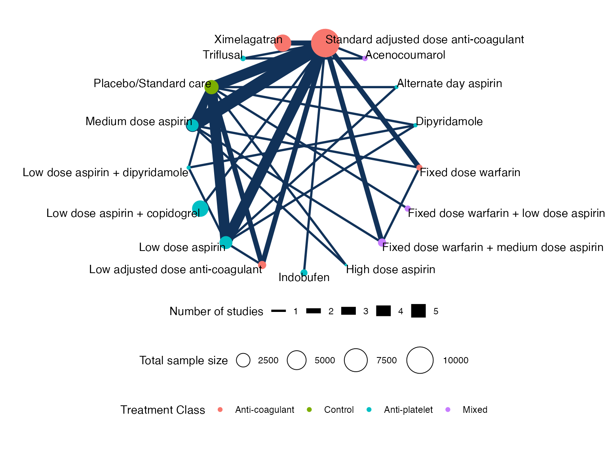
Meta-analysis models
We fit two (random effects) models:
- A standard NMA model without any covariates (model 1 of Cooper et al. (2009));
- A meta-regression model adjusting for the proportion of individuals in each study with prior stroke, with shared interaction coefficients by treatment class (model 4b of Cooper et al. (2009)).
NMA with no covariates
We fit a random effects model using the nma() function
with trt_effects = "random". We use \mathrm{N}(0, 100^2) prior distributions for
the treatment effects d_k and
study-specific intercepts \mu_j, and a
\textrm{half-N}(5^2) prior for the
heterogeneity standard deviation \tau.
We can examine the range of parameter values implied by these prior
distributions with the summary() method:
summary(normal(scale = 100))
#> A Normal prior distribution: location = 0, scale = 100.
#> 50% of the prior density lies between -67.45 and 67.45.
#> 95% of the prior density lies between -196 and 196.
summary(half_normal(scale = 5))
#> A half-Normal prior distribution: scale = 5.
#> 50% of the prior density lies between 0 and 3.37.
#> 95% of the prior density lies between 0 and 9.8.Fitting the model with the nma() function. We increase
the target acceptance rate adapt_delta = 0.99 to minimise
divergent transition warnings.
af_fit_1 <- nma(af_net,
trt_effects = "random",
prior_intercept = normal(scale = 100),
prior_trt = normal(scale = 100),
prior_het = half_normal(scale = 5),
adapt_delta = 0.99)#> Note: Setting "Standard adjusted dose anti-coagulant" as the network reference treatment.Basic parameter summaries are given by the print()
method:
af_fit_1
#> A random effects NMA with a binomial likelihood (logit link).
#> Inference for Stan model: binomial_1par.
#> 4 chains, each with iter=5000; warmup=2500; thin=1;
#> post-warmup draws per chain=2500, total post-warmup draws=10000.
#>
#> mean se_mean sd 2.5% 25% 50%
#> d[Acenocoumarol] -0.78 0.01 0.83 -2.48 -1.30 -0.74
#> d[Alternate day aspirin] -1.02 0.02 1.41 -4.30 -1.80 -0.84
#> d[Dipyridamole] 0.59 0.01 0.45 -0.28 0.30 0.59
#> d[Fixed dose warfarin] 0.93 0.00 0.41 0.13 0.66 0.93
#> d[Fixed dose warfarin + low dose aspirin] 0.47 0.01 0.44 -0.41 0.20 0.47
#> d[Fixed dose warfarin + medium dose aspirin] 0.88 0.00 0.31 0.25 0.69 0.89
#> d[High dose aspirin] 0.51 0.01 0.76 -1.00 0.00 0.53
#> d[Indobufen] 0.24 0.01 0.45 -0.68 -0.05 0.24
#> d[Low adjusted dose anti-coagulant] -0.30 0.00 0.39 -1.07 -0.56 -0.29
#> d[Low dose aspirin] 0.61 0.00 0.22 0.16 0.47 0.62
#> d[Low dose aspirin + copidogrel] 0.51 0.00 0.35 -0.21 0.31 0.51
#> d[Low dose aspirin + dipyridamole] 0.26 0.01 0.47 -0.68 -0.04 0.27
#> d[Medium dose aspirin] 0.38 0.00 0.20 -0.02 0.26 0.39
#> d[Placebo/Standard care] 0.75 0.00 0.20 0.34 0.62 0.76
#> d[Triflusal] 0.65 0.01 0.62 -0.56 0.24 0.64
#> d[Ximelagatran] -0.09 0.00 0.26 -0.61 -0.25 -0.09
#> lp__ -4771.83 0.15 7.28 -4786.99 -4776.51 -4771.51
#> tau 0.28 0.00 0.13 0.04 0.19 0.27
#> 75% 97.5% n_eff Rhat
#> d[Acenocoumarol] -0.22 0.79 8481 1
#> d[Alternate day aspirin] -0.03 1.21 7900 1
#> d[Dipyridamole] 0.88 1.47 5297 1
#> d[Fixed dose warfarin] 1.19 1.73 8431 1
#> d[Fixed dose warfarin + low dose aspirin] 0.75 1.33 5731 1
#> d[Fixed dose warfarin + medium dose aspirin] 1.09 1.50 6640 1
#> d[High dose aspirin] 1.02 2.00 9273 1
#> d[Indobufen] 0.52 1.13 7506 1
#> d[Low adjusted dose anti-coagulant] -0.04 0.44 6588 1
#> d[Low dose aspirin] 0.76 1.05 4325 1
#> d[Low dose aspirin + copidogrel] 0.72 1.24 7131 1
#> d[Low dose aspirin + dipyridamole] 0.58 1.17 6501 1
#> d[Medium dose aspirin] 0.52 0.76 5445 1
#> d[Placebo/Standard care] 0.89 1.15 3325 1
#> d[Triflusal] 1.06 1.88 7559 1
#> d[Ximelagatran] 0.08 0.44 6929 1
#> lp__ -4766.72 -4758.51 2500 1
#> tau 0.36 0.57 1662 1
#>
#> Samples were drawn using NUTS(diag_e) at Fri Oct 9 11:33:52 2026.
#> For each parameter, n_eff is a crude measure of effective sample size,
#> and Rhat is the potential scale reduction factor on split chains (at
#> convergence, Rhat=1).By default, summaries of the study-specific intercepts \mu_j and study-specific relative effects
\delta_{jk} are hidden, but could be
examined by changing the pars argument:
The prior and posterior distributions can be compared visually using
the plot_prior_posterior() function:
plot_prior_posterior(af_fit_1, prior = c("trt", "het"))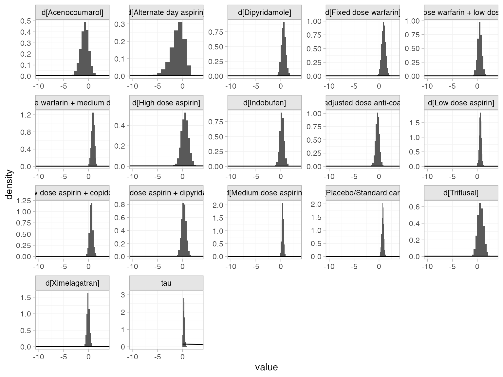
We can compute relative effects against placebo/standard care with
the relative_effects() function with the
trt_ref argument:
(af_1_releff <- relative_effects(af_fit_1, trt_ref = "Placebo/Standard care"))
#> mean sd 2.5% 25% 50% 75% 97.5% Bulk_ESS
#> d[Standard adjusted dose anti-coagulant] -0.75 0.20 -1.15 -0.89 -0.76 -0.62 -0.34 3344
#> d[Acenocoumarol] -1.53 0.86 -3.31 -2.08 -1.51 -0.96 0.11 7969
#> d[Alternate day aspirin] -1.77 1.40 -5.04 -2.55 -1.59 -0.79 0.43 10989
#> d[Dipyridamole] -0.16 0.42 -0.97 -0.44 -0.17 0.10 0.66 8754
#> d[Fixed dose warfarin] 0.17 0.45 -0.69 -0.13 0.18 0.47 1.06 7164
#> d[Fixed dose warfarin + low dose aspirin] -0.28 0.39 -1.07 -0.53 -0.28 -0.03 0.50 8365
#> d[Fixed dose warfarin + medium dose aspirin] 0.13 0.37 -0.61 -0.11 0.13 0.37 0.86 5782
#> d[High dose aspirin] -0.24 0.75 -1.73 -0.74 -0.24 0.27 1.21 11756
#> d[Indobufen] -0.52 0.49 -1.49 -0.83 -0.52 -0.20 0.47 5962
#> d[Low adjusted dose anti-coagulant] -1.05 0.36 -1.77 -1.28 -1.05 -0.82 -0.37 11405
#> d[Low dose aspirin] -0.14 0.21 -0.56 -0.28 -0.14 0.00 0.27 9964
#> d[Low dose aspirin + copidogrel] -0.24 0.40 -1.05 -0.49 -0.24 0.00 0.58 6057
#> d[Low dose aspirin + dipyridamole] -0.49 0.44 -1.38 -0.78 -0.49 -0.20 0.37 10245
#> d[Medium dose aspirin] -0.37 0.23 -0.82 -0.51 -0.37 -0.22 0.08 6432
#> d[Triflusal] -0.10 0.65 -1.38 -0.53 -0.12 0.33 1.20 6968
#> d[Ximelagatran] -0.84 0.33 -1.49 -1.05 -0.84 -0.63 -0.17 4894
#> Tail_ESS Rhat
#> d[Standard adjusted dose anti-coagulant] 5183 1
#> d[Acenocoumarol] 7153 1
#> d[Alternate day aspirin] 5162 1
#> d[Dipyridamole] 7105 1
#> d[Fixed dose warfarin] 7664 1
#> d[Fixed dose warfarin + low dose aspirin] 6352 1
#> d[Fixed dose warfarin + medium dose aspirin] 6279 1
#> d[High dose aspirin] 8691 1
#> d[Indobufen] 5791 1
#> d[Low adjusted dose anti-coagulant] 8346 1
#> d[Low dose aspirin] 7899 1
#> d[Low dose aspirin + copidogrel] 5930 1
#> d[Low dose aspirin + dipyridamole] 7735 1
#> d[Medium dose aspirin] 6033 1
#> d[Triflusal] 6415 1
#> d[Ximelagatran] 5433 1These estimates can easily be plotted with the plot()
method:
plot(af_1_releff, ref_line = 0)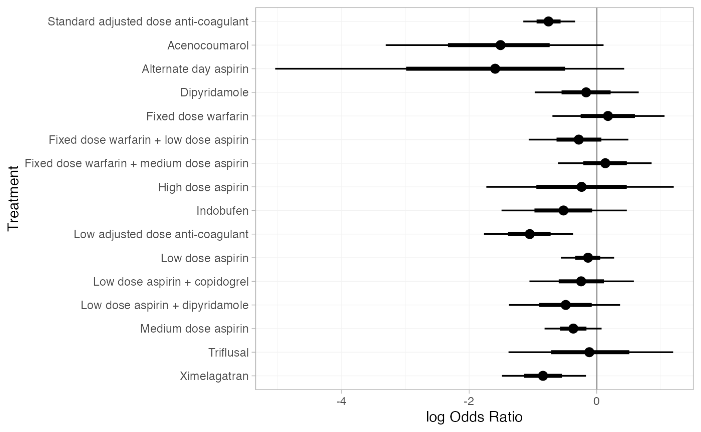
We can also produce treatment rankings, rank probabilities, and cumulative rank probabilities.
(af_1_ranks <- posterior_ranks(af_fit_1))
#> mean sd 2.5% 25% 50% 75% 97.5% Bulk_ESS
#> rank[Standard adjusted dose anti-coagulant] 5.31 1.48 3 4 5 6 8.00 5480
#> rank[Acenocoumarol] 3.05 3.13 1 1 2 3 13.00 7499
#> rank[Alternate day aspirin] 3.78 4.31 1 1 2 5 16.00 11845
#> rank[Dipyridamole] 11.26 3.78 4 8 11 14 17.00 7625
#> rank[Fixed dose warfarin] 14.10 3.06 6 12 15 16 17.00 8313
#> rank[Fixed dose warfarin + low dose aspirin] 10.11 3.80 3 7 10 13 17.00 7836
#> rank[Fixed dose warfarin + medium dose aspirin] 14.07 2.63 8 13 15 16 17.00 6162
#> rank[High dose aspirin] 10.32 5.28 1 6 11 16 17.00 11222
#> rank[Indobufen] 7.98 3.94 2 5 7 11 16.00 6910
#> rank[Low adjusted dose anti-coagulant] 3.74 2.19 1 2 3 5 9.00 7956
#> rank[Low dose aspirin] 11.74 2.28 7 10 12 13 16.00 8792
#> rank[Low dose aspirin + copidogrel] 10.53 3.43 4 8 10 13 17.00 7013
#> rank[Low dose aspirin + dipyridamole] 8.16 3.88 2 5 8 11 16.00 8823
#> rank[Medium dose aspirin] 9.13 2.16 5 8 9 11 14.00 8699
#> rank[Placebo/Standard care] 13.40 1.84 10 12 14 15 17.00 7070
#> rank[Triflusal] 11.46 4.60 3 8 12 16 17.00 7650
#> rank[Ximelagatran] 4.86 2.30 2 3 4 6 10.02 5736
#> Tail_ESS Rhat
#> rank[Standard adjusted dose anti-coagulant] 6623 1
#> rank[Acenocoumarol] 7241 1
#> rank[Alternate day aspirin] 8736 1
#> rank[Dipyridamole] NA 1
#> rank[Fixed dose warfarin] NA 1
#> rank[Fixed dose warfarin + low dose aspirin] 6401 1
#> rank[Fixed dose warfarin + medium dose aspirin] NA 1
#> rank[High dose aspirin] NA 1
#> rank[Indobufen] 7325 1
#> rank[Low adjusted dose anti-coagulant] 7551 1
#> rank[Low dose aspirin] 7550 1
#> rank[Low dose aspirin + copidogrel] 6665 1
#> rank[Low dose aspirin + dipyridamole] 8928 1
#> rank[Medium dose aspirin] 6856 1
#> rank[Placebo/Standard care] 7871 1
#> rank[Triflusal] NA 1
#> rank[Ximelagatran] 6351 1
plot(af_1_ranks)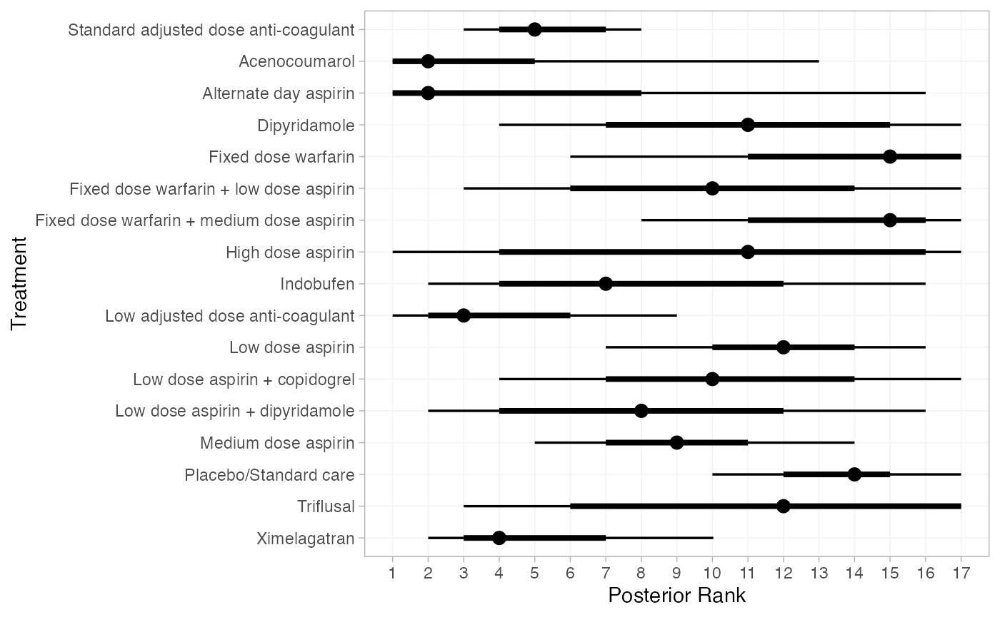
(af_1_rankprobs <- posterior_rank_probs(af_fit_1))
#> p_rank[1] p_rank[2] p_rank[3] p_rank[4] p_rank[5]
#> d[Standard adjusted dose anti-coagulant] 0.00 0.02 0.08 0.20 0.27
#> d[Acenocoumarol] 0.37 0.29 0.10 0.05 0.04
#> d[Alternate day aspirin] 0.46 0.17 0.07 0.04 0.03
#> d[Dipyridamole] 0.00 0.01 0.01 0.02 0.03
#> d[Fixed dose warfarin] 0.00 0.00 0.00 0.00 0.01
#> d[Fixed dose warfarin + low dose aspirin] 0.00 0.01 0.03 0.04 0.04
#> d[Fixed dose warfarin + medium dose aspirin] 0.00 0.00 0.00 0.00 0.00
#> d[High dose aspirin] 0.03 0.05 0.07 0.05 0.05
#> d[Indobufen] 0.01 0.04 0.08 0.08 0.09
#> d[Low adjusted dose anti-coagulant] 0.08 0.24 0.26 0.15 0.09
#> d[Low dose aspirin] 0.00 0.00 0.00 0.00 0.00
#> d[Low dose aspirin + copidogrel] 0.00 0.01 0.01 0.02 0.03
#> d[Low dose aspirin + dipyridamole] 0.01 0.04 0.07 0.08 0.08
#> d[Medium dose aspirin] 0.00 0.00 0.00 0.01 0.02
#> d[Placebo/Standard care] 0.00 0.00 0.00 0.00 0.00
#> d[Triflusal] 0.00 0.02 0.04 0.04 0.04
#> d[Ximelagatran] 0.02 0.10 0.18 0.21 0.17
#> p_rank[6] p_rank[7] p_rank[8] p_rank[9]
#> d[Standard adjusted dose anti-coagulant] 0.23 0.12 0.05 0.02
#> d[Acenocoumarol] 0.03 0.02 0.02 0.01
#> d[Alternate day aspirin] 0.03 0.03 0.02 0.02
#> d[Dipyridamole] 0.04 0.06 0.07 0.08
#> d[Fixed dose warfarin] 0.01 0.02 0.02 0.04
#> d[Fixed dose warfarin + low dose aspirin] 0.06 0.08 0.09 0.10
#> d[Fixed dose warfarin + medium dose aspirin] 0.01 0.01 0.02 0.03
#> d[High dose aspirin] 0.05 0.05 0.05 0.05
#> d[Indobufen] 0.10 0.11 0.09 0.07
#> d[Low adjusted dose anti-coagulant] 0.06 0.05 0.03 0.02
#> d[Low dose aspirin] 0.01 0.02 0.05 0.09
#> d[Low dose aspirin + copidogrel] 0.06 0.08 0.09 0.10
#> d[Low dose aspirin + dipyridamole] 0.09 0.10 0.09 0.08
#> d[Medium dose aspirin] 0.07 0.12 0.18 0.18
#> d[Placebo/Standard care] 0.00 0.00 0.01 0.02
#> d[Triflusal] 0.04 0.06 0.06 0.06
#> d[Ximelagatran] 0.12 0.08 0.05 0.03
#> p_rank[10] p_rank[11] p_rank[12] p_rank[13]
#> d[Standard adjusted dose anti-coagulant] 0.00 0.00 0.00 0.00
#> d[Acenocoumarol] 0.01 0.01 0.01 0.01
#> d[Alternate day aspirin] 0.02 0.02 0.01 0.01
#> d[Dipyridamole] 0.08 0.08 0.08 0.08
#> d[Fixed dose warfarin] 0.04 0.05 0.06 0.07
#> d[Fixed dose warfarin + low dose aspirin] 0.09 0.08 0.09 0.07
#> d[Fixed dose warfarin + medium dose aspirin] 0.04 0.05 0.07 0.09
#> d[High dose aspirin] 0.05 0.04 0.05 0.05
#> d[Indobufen] 0.07 0.06 0.05 0.04
#> d[Low adjusted dose anti-coagulant] 0.01 0.01 0.00 0.00
#> d[Low dose aspirin] 0.12 0.15 0.17 0.15
#> d[Low dose aspirin + copidogrel] 0.11 0.10 0.09 0.08
#> d[Low dose aspirin + dipyridamole] 0.07 0.07 0.05 0.04
#> d[Medium dose aspirin] 0.16 0.12 0.07 0.04
#> d[Placebo/Standard care] 0.04 0.08 0.14 0.20
#> d[Triflusal] 0.06 0.06 0.05 0.06
#> d[Ximelagatran] 0.02 0.01 0.01 0.00
#> p_rank[14] p_rank[15] p_rank[16] p_rank[17]
#> d[Standard adjusted dose anti-coagulant] 0.00 0.00 0.00 0.00
#> d[Acenocoumarol] 0.01 0.01 0.01 0.00
#> d[Alternate day aspirin] 0.01 0.01 0.02 0.02
#> d[Dipyridamole] 0.08 0.09 0.09 0.07
#> d[Fixed dose warfarin] 0.09 0.13 0.20 0.25
#> d[Fixed dose warfarin + low dose aspirin] 0.06 0.06 0.05 0.04
#> d[Fixed dose warfarin + medium dose aspirin] 0.12 0.18 0.21 0.16
#> d[High dose aspirin] 0.05 0.07 0.09 0.17
#> d[Indobufen] 0.04 0.04 0.03 0.02
#> d[Low adjusted dose anti-coagulant] 0.00 0.00 0.00 0.00
#> d[Low dose aspirin] 0.12 0.07 0.03 0.01
#> d[Low dose aspirin + copidogrel] 0.07 0.06 0.05 0.03
#> d[Low dose aspirin + dipyridamole] 0.04 0.03 0.03 0.02
#> d[Medium dose aspirin] 0.02 0.01 0.00 0.00
#> d[Placebo/Standard care] 0.22 0.17 0.09 0.03
#> d[Triflusal] 0.06 0.08 0.10 0.18
#> d[Ximelagatran] 0.00 0.00 0.00 0.00
plot(af_1_rankprobs)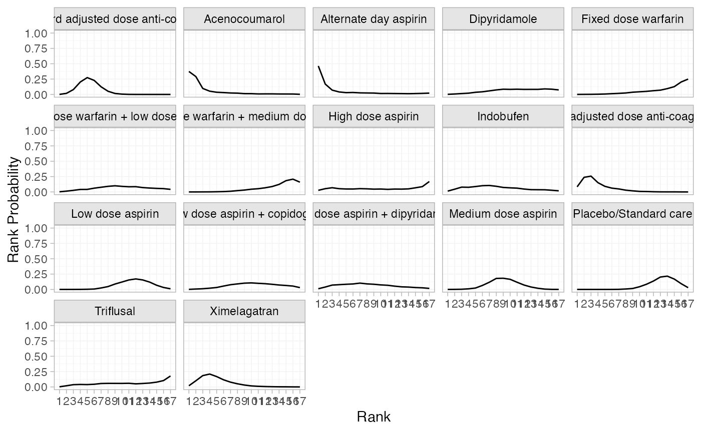
(af_1_cumrankprobs <- posterior_rank_probs(af_fit_1, cumulative = TRUE))
#> p_rank[1] p_rank[2] p_rank[3] p_rank[4] p_rank[5]
#> d[Standard adjusted dose anti-coagulant] 0.00 0.02 0.10 0.30 0.57
#> d[Acenocoumarol] 0.37 0.67 0.76 0.82 0.85
#> d[Alternate day aspirin] 0.46 0.63 0.70 0.74 0.77
#> d[Dipyridamole] 0.00 0.01 0.02 0.04 0.08
#> d[Fixed dose warfarin] 0.00 0.00 0.00 0.01 0.01
#> d[Fixed dose warfarin + low dose aspirin] 0.00 0.02 0.04 0.08 0.12
#> d[Fixed dose warfarin + medium dose aspirin] 0.00 0.00 0.00 0.00 0.01
#> d[High dose aspirin] 0.03 0.08 0.15 0.20 0.25
#> d[Indobufen] 0.01 0.06 0.14 0.21 0.30
#> d[Low adjusted dose anti-coagulant] 0.08 0.32 0.58 0.73 0.82
#> d[Low dose aspirin] 0.00 0.00 0.00 0.00 0.00
#> d[Low dose aspirin + copidogrel] 0.00 0.01 0.02 0.04 0.07
#> d[Low dose aspirin + dipyridamole] 0.01 0.05 0.12 0.20 0.28
#> d[Medium dose aspirin] 0.00 0.00 0.00 0.01 0.04
#> d[Placebo/Standard care] 0.00 0.00 0.00 0.00 0.00
#> d[Triflusal] 0.00 0.02 0.06 0.10 0.14
#> d[Ximelagatran] 0.02 0.12 0.30 0.51 0.68
#> p_rank[6] p_rank[7] p_rank[8] p_rank[9]
#> d[Standard adjusted dose anti-coagulant] 0.80 0.93 0.98 0.99
#> d[Acenocoumarol] 0.88 0.90 0.93 0.94
#> d[Alternate day aspirin] 0.80 0.83 0.85 0.88
#> d[Dipyridamole] 0.12 0.18 0.25 0.34
#> d[Fixed dose warfarin] 0.03 0.04 0.07 0.10
#> d[Fixed dose warfarin + low dose aspirin] 0.18 0.26 0.35 0.45
#> d[Fixed dose warfarin + medium dose aspirin] 0.01 0.02 0.04 0.07
#> d[High dose aspirin] 0.30 0.35 0.40 0.45
#> d[Indobufen] 0.40 0.51 0.60 0.67
#> d[Low adjusted dose anti-coagulant] 0.88 0.93 0.96 0.98
#> d[Low dose aspirin] 0.01 0.03 0.08 0.17
#> d[Low dose aspirin + copidogrel] 0.13 0.20 0.29 0.40
#> d[Low dose aspirin + dipyridamole] 0.37 0.48 0.57 0.65
#> d[Medium dose aspirin] 0.10 0.22 0.40 0.58
#> d[Placebo/Standard care] 0.00 0.00 0.01 0.02
#> d[Triflusal] 0.18 0.24 0.29 0.35
#> d[Ximelagatran] 0.80 0.88 0.93 0.96
#> p_rank[10] p_rank[11] p_rank[12] p_rank[13]
#> d[Standard adjusted dose anti-coagulant] 1.00 1.00 1.00 1.00
#> d[Acenocoumarol] 0.95 0.96 0.97 0.98
#> d[Alternate day aspirin] 0.89 0.91 0.92 0.94
#> d[Dipyridamole] 0.42 0.50 0.59 0.67
#> d[Fixed dose warfarin] 0.15 0.20 0.26 0.33
#> d[Fixed dose warfarin + low dose aspirin] 0.54 0.63 0.71 0.78
#> d[Fixed dose warfarin + medium dose aspirin] 0.12 0.17 0.24 0.33
#> d[High dose aspirin] 0.49 0.53 0.58 0.63
#> d[Indobufen] 0.74 0.80 0.85 0.88
#> d[Low adjusted dose anti-coagulant] 0.99 0.99 1.00 1.00
#> d[Low dose aspirin] 0.29 0.44 0.62 0.77
#> d[Low dose aspirin + copidogrel] 0.50 0.60 0.70 0.78
#> d[Low dose aspirin + dipyridamole] 0.72 0.79 0.85 0.89
#> d[Medium dose aspirin] 0.75 0.86 0.93 0.97
#> d[Placebo/Standard care] 0.07 0.15 0.29 0.49
#> d[Triflusal] 0.41 0.47 0.52 0.58
#> d[Ximelagatran] 0.98 0.99 0.99 1.00
#> p_rank[14] p_rank[15] p_rank[16] p_rank[17]
#> d[Standard adjusted dose anti-coagulant] 1.00 1.00 1.00 1
#> d[Acenocoumarol] 0.98 0.99 1.00 1
#> d[Alternate day aspirin] 0.95 0.96 0.98 1
#> d[Dipyridamole] 0.75 0.84 0.93 1
#> d[Fixed dose warfarin] 0.42 0.55 0.75 1
#> d[Fixed dose warfarin + low dose aspirin] 0.85 0.90 0.96 1
#> d[Fixed dose warfarin + medium dose aspirin] 0.45 0.63 0.84 1
#> d[High dose aspirin] 0.68 0.74 0.83 1
#> d[Indobufen] 0.92 0.95 0.98 1
#> d[Low adjusted dose anti-coagulant] 1.00 1.00 1.00 1
#> d[Low dose aspirin] 0.89 0.96 0.99 1
#> d[Low dose aspirin + copidogrel] 0.85 0.92 0.97 1
#> d[Low dose aspirin + dipyridamole] 0.93 0.96 0.98 1
#> d[Medium dose aspirin] 0.99 1.00 1.00 1
#> d[Placebo/Standard care] 0.71 0.88 0.97 1
#> d[Triflusal] 0.64 0.72 0.82 1
#> d[Ximelagatran] 1.00 1.00 1.00 1
plot(af_1_cumrankprobs)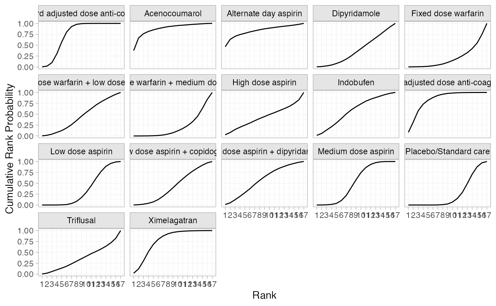
Network meta-regression adjusting for proportion of prior stroke
We now consider a meta-regression model adjusting for the proportion
of individuals in each study with prior stroke, with shared interaction
coefficients by treatment class. The regression model is specified in
the nma() function using a formula in the
regression argument. The formula ~ .trt:stroke
means that interactions of prior stroke with treatment will be included;
the .trt special variable indicates treatment, and
stroke is in the original data set. We specify
class_interactions = "common" to denote that the
interaction parameters are to be common (i.e. shared) between treatments
within each class. (Setting
class_interactions = "independent" would fit model 2 of
Cooper et al. (2009) with separate interactions for
each treatment, data permitting.) We use the same prior distributions as
above, but additionally require a prior distribution for the regression
coefficients prior_reg; we use a \mathrm{N}(0, 100^2) prior distribution. The
QR
decomposition can greatly improve the efficiency of sampling for
regression models by decorrelating the sampling space; we specify that
this should be used with QR = TRUE, and increase the target
acceptance rate adapt_delta = 0.99 to minimise divergent
transition warnings.
af_fit_4b <- nma(af_net,
trt_effects = "random",
regression = ~ .trt:stroke,
class_interactions = "common",
QR = TRUE,
prior_intercept = normal(scale = 100),
prior_trt = normal(scale = 100),
prior_reg = normal(scale = 100),
prior_het = half_normal(scale = 5),
adapt_delta = 0.99)#> Note: Setting "Standard adjusted dose anti-coagulant" as the network reference treatment.
#> Warning: There were 2 divergent transitions after warmup. See
#> https://mc-stan.org/misc/warnings.html#divergent-transitions-after-warmup
#> to find out why this is a problem and how to eliminate them.
#> Warning: Examine the pairs() plot to diagnose sampling problemsBasic parameter summaries are given by the print()
method:
af_fit_4b
#> A random effects NMA with a binomial likelihood (logit link).
#> Regression model: ~.trt:stroke.
#> Centred covariates at the following overall mean values:
#> stroke
#> 0.2957377
#> Inference for Stan model: binomial_1par.
#> 4 chains, each with iter=2000; warmup=1000; thin=1;
#> post-warmup draws per chain=1000, total post-warmup draws=4000.
#>
#> mean se_mean sd 2.5% 25% 50%
#> beta[.trtclassControl:stroke] 0.71 0.01 0.45 -0.16 0.41 0.71
#> beta[.trtclassAnti-platelet:stroke] 0.94 0.01 0.42 0.13 0.67 0.94
#> beta[.trtclassMixed:stroke] 3.91 0.03 2.05 -0.11 2.55 3.86
#> d[Acenocoumarol] 0.36 0.01 1.01 -1.67 -0.29 0.38
#> d[Alternate day aspirin] -0.93 0.03 1.41 -4.18 -1.68 -0.75
#> d[Dipyridamole] 0.58 0.01 0.40 -0.19 0.31 0.58
#> d[Fixed dose warfarin] 0.64 0.01 0.38 -0.10 0.39 0.64
#> d[Fixed dose warfarin + low dose aspirin] 1.45 0.01 0.73 0.03 0.99 1.45
#> d[Fixed dose warfarin + medium dose aspirin] 1.00 0.00 0.30 0.42 0.81 1.00
#> d[High dose aspirin] 0.43 0.01 0.76 -1.05 -0.09 0.43
#> d[Indobufen] -0.40 0.01 0.51 -1.41 -0.73 -0.41
#> d[Low adjusted dose anti-coagulant] -0.41 0.01 0.37 -1.16 -0.66 -0.41
#> d[Low dose aspirin] 0.72 0.00 0.21 0.32 0.59 0.72
#> d[Low dose aspirin + copidogrel] 0.66 0.01 0.29 0.09 0.49 0.65
#> d[Low dose aspirin + dipyridamole] 0.26 0.01 0.43 -0.59 -0.02 0.26
#> d[Medium dose aspirin] 0.35 0.00 0.17 0.01 0.24 0.35
#> d[Placebo/Standard care] 0.79 0.00 0.19 0.42 0.67 0.79
#> d[Triflusal] 0.91 0.01 0.60 -0.22 0.50 0.91
#> d[Ximelagatran] -0.08 0.00 0.22 -0.53 -0.21 -0.09
#> lp__ -4770.94 0.20 7.06 -4785.88 -4775.47 -4770.62
#> tau 0.19 0.01 0.13 0.01 0.09 0.18
#> 75% 97.5% n_eff Rhat
#> beta[.trtclassControl:stroke] 1.00 1.62 4461 1.00
#> beta[.trtclassAnti-platelet:stroke] 1.21 1.78 5010 1.00
#> beta[.trtclassMixed:stroke] 5.23 8.08 5074 1.00
#> d[Acenocoumarol] 1.07 2.33 5261 1.00
#> d[Alternate day aspirin] 0.03 1.26 1813 1.00
#> d[Dipyridamole] 0.84 1.35 5758 1.00
#> d[Fixed dose warfarin] 0.89 1.40 4196 1.00
#> d[Fixed dose warfarin + low dose aspirin] 1.92 2.87 5223 1.00
#> d[Fixed dose warfarin + medium dose aspirin] 1.19 1.61 5112 1.00
#> d[High dose aspirin] 0.94 1.90 6361 1.00
#> d[Indobufen] -0.07 0.57 4524 1.00
#> d[Low adjusted dose anti-coagulant] -0.16 0.30 5401 1.00
#> d[Low dose aspirin] 0.86 1.13 5191 1.00
#> d[Low dose aspirin + copidogrel] 0.82 1.26 2455 1.00
#> d[Low dose aspirin + dipyridamole] 0.54 1.10 5788 1.00
#> d[Medium dose aspirin] 0.46 0.69 4528 1.00
#> d[Placebo/Standard care] 0.92 1.18 5404 1.00
#> d[Triflusal] 1.32 2.10 5790 1.00
#> d[Ximelagatran] 0.05 0.36 2840 1.00
#> lp__ -4766.02 -4758.13 1200 1.00
#> tau 0.26 0.49 387 1.01
#>
#> Samples were drawn using NUTS(diag_e) at Fri Oct 9 11:34:06 2026.
#> For each parameter, n_eff is a crude measure of effective sample size,
#> and Rhat is the potential scale reduction factor on split chains (at
#> convergence, Rhat=1).The estimated treatment effects d[] shown here
correspond to relative effects at the reference level of the covariate,
here proportion of prior stroke centered at the network mean value
0.296.
By default, summaries of the study-specific intercepts \mu_j and study-specific relative effects
\delta_{jk} are hidden, but could be
examined by changing the pars argument:
The prior and posterior distributions can be compared visually using
the plot_prior_posterior() function:
plot_prior_posterior(af_fit_4b, prior = c("reg", "het"))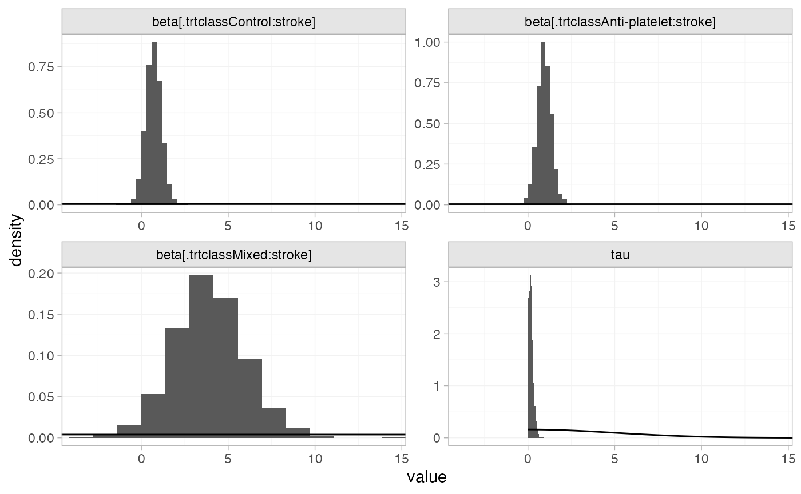
We can compute relative effects against placebo/standard care with
the relative_effects() function with the
trt_ref argument, which by default produces relative
effects for the observed proportions of prior stroke in each study:
# Not run
(af_4b_releff <- relative_effects(af_fit_4b, trt_ref = "Placebo/Standard care"))
plot(af_4b_releff, ref_line = 0)We can produce estimated treatment effects for particular covariate
values using the newdata argument. For example, treatment
effects when no individuals or all individuals have prior stroke are
produced by
(af_4b_releff_01 <- relative_effects(af_fit_4b,
trt_ref = "Placebo/Standard care",
newdata = data.frame(stroke = c(0, 1),
label = c("stroke = 0", "stroke = 1")),
study = label))
#> ------------------------------------------------------------- Study: stroke = 0 ----
#>
#> Covariate values:
#> stroke
#> 0
#>
#> mean sd 2.5% 25% 50% 75%
#> d[stroke = 0: Standard adjusted dose anti-coagulant] -0.58 0.24 -1.06 -0.75 -0.59 -0.43
#> d[stroke = 0: Acenocoumarol] -1.38 0.82 -3.08 -1.90 -1.35 -0.81
#> d[stroke = 0: Alternate day aspirin] -1.80 1.41 -5.16 -2.55 -1.61 -0.83
#> d[stroke = 0: Dipyridamole] -0.28 0.43 -1.11 -0.57 -0.28 0.00
#> d[stroke = 0: Fixed dose warfarin] 0.06 0.43 -0.78 -0.22 0.06 0.34
#> d[stroke = 0: Fixed dose warfarin + low dose aspirin] -0.29 0.34 -0.99 -0.50 -0.29 -0.08
#> d[stroke = 0: Fixed dose warfarin + medium dose aspirin] -0.74 0.64 -2.03 -1.15 -0.74 -0.31
#> d[stroke = 0: High dose aspirin] -0.43 0.78 -2.01 -0.95 -0.44 0.09
#> d[stroke = 0: Indobufen] -1.27 0.58 -2.40 -1.64 -1.27 -0.88
#> d[stroke = 0: Low adjusted dose anti-coagulant] -1.00 0.33 -1.64 -1.22 -1.00 -0.77
#> d[stroke = 0: Low dose aspirin] -0.14 0.23 -0.58 -0.29 -0.14 0.01
#> d[stroke = 0: Low dose aspirin + copidogrel] -0.20 0.36 -0.89 -0.43 -0.21 0.02
#> d[stroke = 0: Low dose aspirin + dipyridamole] -0.60 0.46 -1.50 -0.90 -0.60 -0.30
#> d[stroke = 0: Medium dose aspirin] -0.51 0.27 -1.05 -0.69 -0.51 -0.33
#> d[stroke = 0: Triflusal] 0.05 0.62 -1.16 -0.38 0.05 0.46
#> d[stroke = 0: Ximelagatran] -0.67 0.33 -1.31 -0.88 -0.67 -0.45
#> 97.5% Bulk_ESS Tail_ESS Rhat
#> d[stroke = 0: Standard adjusted dose anti-coagulant] -0.10 4883 2917 1
#> d[stroke = 0: Acenocoumarol] 0.15 4467 3038 1
#> d[stroke = 0: Alternate day aspirin] 0.43 2554 1442 1
#> d[stroke = 0: Dipyridamole] 0.57 5177 3033 1
#> d[stroke = 0: Fixed dose warfarin] 0.92 4630 3124 1
#> d[stroke = 0: Fixed dose warfarin + low dose aspirin] 0.39 5068 2060 1
#> d[stroke = 0: Fixed dose warfarin + medium dose aspirin] 0.53 4597 2620 1
#> d[stroke = 0: High dose aspirin] 1.10 6479 3168 1
#> d[stroke = 0: Indobufen] -0.11 4624 2632 1
#> d[stroke = 0: Low adjusted dose anti-coagulant] -0.34 5828 3252 1
#> d[stroke = 0: Low dose aspirin] 0.30 4565 2722 1
#> d[stroke = 0: Low dose aspirin + copidogrel] 0.55 3551 1947 1
#> d[stroke = 0: Low dose aspirin + dipyridamole] 0.32 5397 3087 1
#> d[stroke = 0: Medium dose aspirin] 0.02 4789 2744 1
#> d[stroke = 0: Triflusal] 1.26 5621 3308 1
#> d[stroke = 0: Ximelagatran] -0.02 4013 2905 1
#>
#> ------------------------------------------------------------- Study: stroke = 1 ----
#>
#> Covariate values:
#> stroke
#> 1
#>
#> mean sd 2.5% 25% 50% 75%
#> d[stroke = 1: Standard adjusted dose anti-coagulant] -1.29 0.36 -2.01 -1.53 -1.29 -1.05
#> d[stroke = 1: Acenocoumarol] 1.82 2.25 -2.59 0.40 1.76 3.29
#> d[stroke = 1: Alternate day aspirin] -1.57 1.43 -4.91 -2.33 -1.41 -0.60
#> d[stroke = 1: Dipyridamole] -0.05 0.38 -0.81 -0.30 -0.05 0.19
#> d[stroke = 1: Fixed dose warfarin] -0.65 0.52 -1.62 -1.00 -0.65 -0.31
#> d[stroke = 1: Fixed dose warfarin + low dose aspirin] 2.91 2.12 -1.27 1.57 2.90 4.23
#> d[stroke = 1: Fixed dose warfarin + medium dose aspirin] 2.46 1.59 -0.70 1.45 2.42 3.45
#> d[stroke = 1: High dose aspirin] -0.21 0.74 -1.72 -0.70 -0.21 0.29
#> d[stroke = 1: Indobufen] -1.04 0.54 -2.12 -1.39 -1.03 -0.70
#> d[stroke = 1: Low adjusted dose anti-coagulant] -1.71 0.52 -2.75 -2.05 -1.70 -1.36
#> d[stroke = 1: Low dose aspirin] 0.09 0.29 -0.49 -0.09 0.09 0.27
#> d[stroke = 1: Low dose aspirin + copidogrel] 0.03 0.40 -0.77 -0.22 0.03 0.27
#> d[stroke = 1: Low dose aspirin + dipyridamole] -0.38 0.41 -1.22 -0.64 -0.37 -0.11
#> d[stroke = 1: Medium dose aspirin] -0.29 0.25 -0.82 -0.43 -0.28 -0.12
#> d[stroke = 1: Triflusal] 0.28 0.66 -0.99 -0.16 0.27 0.71
#> d[stroke = 1: Ximelagatran] -1.38 0.42 -2.19 -1.65 -1.38 -1.11
#> 97.5% Bulk_ESS Tail_ESS Rhat
#> d[stroke = 1: Standard adjusted dose anti-coagulant] -0.61 5202 2837 1
#> d[stroke = 1: Acenocoumarol] 6.41 5305 2821 1
#> d[stroke = 1: Alternate day aspirin] 0.71 2595 1463 1
#> d[stroke = 1: Dipyridamole] 0.69 5906 3228 1
#> d[stroke = 1: Fixed dose warfarin] 0.38 5108 2850 1
#> d[stroke = 1: Fixed dose warfarin + low dose aspirin] 7.27 5122 2926 1
#> d[stroke = 1: Fixed dose warfarin + medium dose aspirin] 5.72 5111 3040 1
#> d[stroke = 1: High dose aspirin] 1.22 6358 3181 1
#> d[stroke = 1: Indobufen] 0.03 4633 2181 1
#> d[stroke = 1: Low adjusted dose anti-coagulant] -0.69 4901 3054 1
#> d[stroke = 1: Low dose aspirin] 0.68 4951 2576 1
#> d[stroke = 1: Low dose aspirin + copidogrel] 0.82 3576 2118 1
#> d[stroke = 1: Low dose aspirin + dipyridamole] 0.42 5065 2803 1
#> d[stroke = 1: Medium dose aspirin] 0.18 4601 2344 1
#> d[stroke = 1: Triflusal] 1.58 5711 3196 1
#> d[stroke = 1: Ximelagatran] -0.55 4263 2425 1
plot(af_4b_releff_01, ref_line = 0)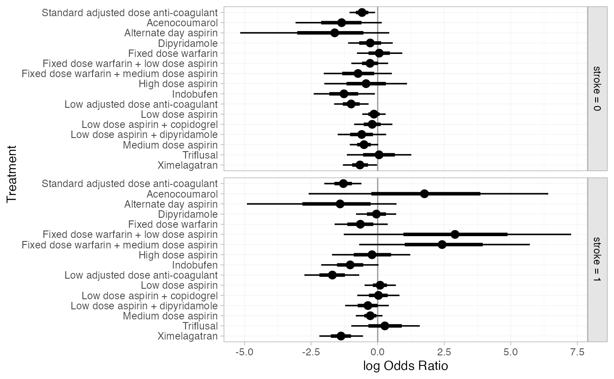
The estimated class interactions (against the reference “Mixed” class) are very uncertain.
plot(af_fit_4b, pars = "beta", stat = "halfeye", ref_line = 0)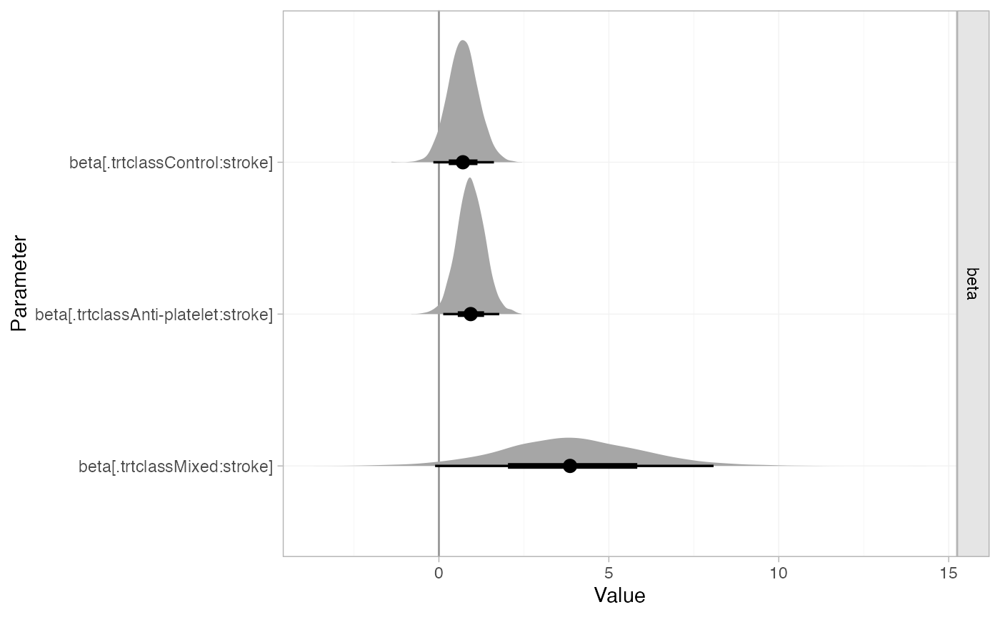
The interactions are more straightforward to interpret if we transform the interaction coefficients (using the consistency equations) so that they are against the control class:
af_4b_beta <- as.array(af_fit_4b, pars = "beta")
# Subtract beta[Control:stroke] from the other class interactions
af_4b_beta[ , , 2:3] <- sweep(af_4b_beta[ , , 2:3], 1:2,
af_4b_beta[ , , "beta[.trtclassControl:stroke]"], FUN = "-")
# Set beta[Anti-coagulant:stroke] = -beta[Control:stroke]
af_4b_beta[ , , "beta[.trtclassControl:stroke]"] <- -af_4b_beta[ , , "beta[.trtclassControl:stroke]"]
names(af_4b_beta)[1] <- "beta[.trtclassAnti-coagulant:stroke]"
# Summarise
summary(af_4b_beta)
#> mean sd 2.5% 25% 50% 75% 97.5% Bulk_ESS
#> beta[.trtclassAnti-coagulant:stroke] -0.71 0.45 -1.62 -1.00 -0.71 -0.41 0.16 4630
#> beta[.trtclassAnti-platelet:stroke] 0.23 0.34 -0.47 0.02 0.23 0.45 0.87 4901
#> beta[.trtclassMixed:stroke] 3.20 2.09 -0.94 1.86 3.18 4.51 7.50 4997
#> Tail_ESS Rhat
#> beta[.trtclassAnti-coagulant:stroke] 2717 1
#> beta[.trtclassAnti-platelet:stroke] 2966 1
#> beta[.trtclassMixed:stroke] 2846 1
plot(summary(af_4b_beta), stat = "halfeye", ref_line = 0)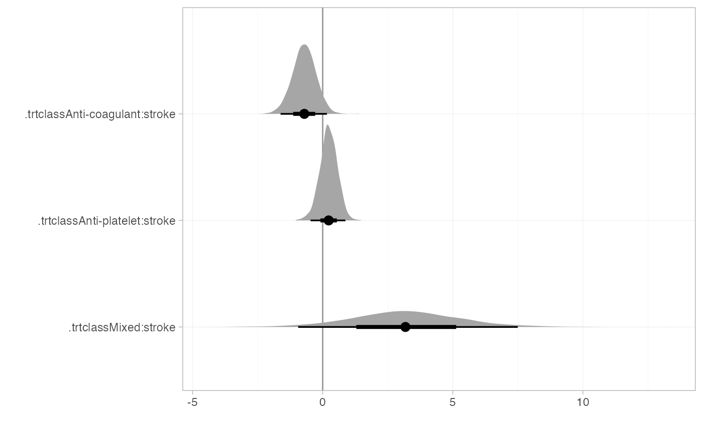
There is some evidence that the effect of anti-coagulants increases (compared to control) with prior stroke. There is little evidence the effect of anti-platelets reduces with prior stroke, although the point estimate represents a substantial reduction in effectiveness, and the 95% Credible Interval includes values that correspond to substantial increases in treatment effect. The interaction effect of stroke on mixed treatments is very uncertain, but potentially indicates a substantial reduction in treatment effects with prior stroke.
We can also produce treatment rankings, rank probabilities, and
cumulative rank probabilities. By default (without the
newdata argument specified), these are produced at the
value of stroke for each study in the network in turn. To
instead produce rankings for when no individuals or all individuals have
prior stroke, we specify the newdata argument.
(af_4b_ranks <- posterior_ranks(af_fit_4b,
newdata = data.frame(stroke = c(0, 1),
label = c("stroke = 0", "stroke = 1")),
study = label))
#> ------------------------------------------------------------- Study: stroke = 0 ----
#>
#> Covariate values:
#> stroke
#> 0
#>
#> mean sd 2.5% 25% 50% 75% 97.5%
#> rank[stroke = 0: Standard adjusted dose anti-coagulant] 7.71 1.89 4 6 8 9 11.00
#> rank[stroke = 0: Acenocoumarol] 3.96 3.69 1 1 2 5 15.00
#> rank[stroke = 0: Alternate day aspirin] 4.01 4.48 1 1 2 5 16.00
#> rank[stroke = 0: Dipyridamole] 11.13 3.62 4 8 11 14 17.00
#> rank[stroke = 0: Fixed dose warfarin] 14.15 2.85 7 12 15 16 17.00
#> rank[stroke = 0: Fixed dose warfarin + low dose aspirin] 10.99 3.66 4 8 11 14 17.00
#> rank[stroke = 0: Fixed dose warfarin + medium dose aspirin] 7.14 4.50 1 3 6 10 16.00
#> rank[stroke = 0: High dose aspirin] 9.63 5.32 1 5 10 15 17.00
#> rank[stroke = 0: Indobufen] 3.70 2.86 1 2 3 4 12.03
#> rank[stroke = 0: Low adjusted dose anti-coagulant] 4.60 2.46 1 3 4 6 11.00
#> rank[stroke = 0: Low dose aspirin] 12.91 1.98 9 12 13 14 16.00
#> rank[stroke = 0: Low dose aspirin + copidogrel] 12.03 2.96 5 10 12 14 17.00
#> rank[stroke = 0: Low dose aspirin + dipyridamole] 7.89 3.72 2 5 7 11 16.00
#> rank[stroke = 0: Medium dose aspirin] 8.61 2.23 4 7 9 10 13.00
#> rank[stroke = 0: Placebo/Standard care] 14.27 1.90 10 13 15 16 17.00
#> rank[stroke = 0: Triflusal] 13.33 4.06 4 11 15 17 17.00
#> rank[stroke = 0: Ximelagatran] 6.93 2.60 3 5 7 9 13.00
#> Bulk_ESS Tail_ESS Rhat
#> rank[stroke = 0: Standard adjusted dose anti-coagulant] 4611 3159 1
#> rank[stroke = 0: Acenocoumarol] 4621 3405 1
#> rank[stroke = 0: Alternate day aspirin] 3882 2835 1
#> rank[stroke = 0: Dipyridamole] 5599 NA 1
#> rank[stroke = 0: Fixed dose warfarin] 4664 NA 1
#> rank[stroke = 0: Fixed dose warfarin + low dose aspirin] 4578 2959 1
#> rank[stroke = 0: Fixed dose warfarin + medium dose aspirin] 4778 3261 1
#> rank[stroke = 0: High dose aspirin] 6178 NA 1
#> rank[stroke = 0: Indobufen] 3491 2877 1
#> rank[stroke = 0: Low adjusted dose anti-coagulant] 4322 3274 1
#> rank[stroke = 0: Low dose aspirin] 3873 3162 1
#> rank[stroke = 0: Low dose aspirin + copidogrel] 3576 2774 1
#> rank[stroke = 0: Low dose aspirin + dipyridamole] 5010 3192 1
#> rank[stroke = 0: Medium dose aspirin] 4328 2917 1
#> rank[stroke = 0: Placebo/Standard care] 3616 NA 1
#> rank[stroke = 0: Triflusal] 5035 NA 1
#> rank[stroke = 0: Ximelagatran] 3989 2766 1
#>
#> ------------------------------------------------------------- Study: stroke = 1 ----
#>
#> Covariate values:
#> stroke
#> 1
#>
#> mean sd 2.5% 25% 50% 75% 97.5%
#> rank[stroke = 1: Standard adjusted dose anti-coagulant] 3.61 1.12 2.00 3 4 4 6
#> rank[stroke = 1: Acenocoumarol] 13.29 4.32 1.00 14 15 16 17
#> rank[stroke = 1: Alternate day aspirin] 4.45 4.05 1.00 1 3 6 14
#> rank[stroke = 1: Dipyridamole] 10.57 2.68 6.00 9 11 13 15
#> rank[stroke = 1: Fixed dose warfarin] 7.05 2.67 3.00 5 6 8 14
#> rank[stroke = 1: Fixed dose warfarin + low dose aspirin] 15.82 2.87 5.98 16 17 17 17
#> rank[stroke = 1: Fixed dose warfarin + medium dose aspirin] 15.43 1.92 9.00 15 16 16 17
#> rank[stroke = 1: High dose aspirin] 9.46 3.97 2.00 6 9 13 16
#> rank[stroke = 1: Indobufen] 5.02 2.24 1.00 4 5 6 11
#> rank[stroke = 1: Low adjusted dose anti-coagulant] 2.05 1.31 1.00 1 2 2 5
#> rank[stroke = 1: Low dose aspirin] 11.86 1.83 8.00 11 12 13 15
#> rank[stroke = 1: Low dose aspirin + copidogrel] 11.14 2.43 6.00 9 11 13 15
#> rank[stroke = 1: Low dose aspirin + dipyridamole] 8.25 2.63 4.00 6 8 10 14
#> rank[stroke = 1: Medium dose aspirin] 8.64 1.73 6.00 7 8 10 12
#> rank[stroke = 1: Placebo/Standard care] 11.14 1.95 7.00 10 11 12 15
#> rank[stroke = 1: Triflusal] 12.07 3.12 5.00 10 13 14 17
#> rank[stroke = 1: Ximelagatran] 3.14 1.38 1.00 2 3 4 6
#> Bulk_ESS Tail_ESS Rhat
#> rank[stroke = 1: Standard adjusted dose anti-coagulant] 4278 3530 1
#> rank[stroke = 1: Acenocoumarol] 4533 NA 1
#> rank[stroke = 1: Alternate day aspirin] 3796 2596 1
#> rank[stroke = 1: Dipyridamole] 4797 3224 1
#> rank[stroke = 1: Fixed dose warfarin] 4208 3170 1
#> rank[stroke = 1: Fixed dose warfarin + low dose aspirin] 3300 NA 1
#> rank[stroke = 1: Fixed dose warfarin + medium dose aspirin] 3671 NA 1
#> rank[stroke = 1: High dose aspirin] 5839 3415 1
#> rank[stroke = 1: Indobufen] 3923 2714 1
#> rank[stroke = 1: Low adjusted dose anti-coagulant] 3026 3053 1
#> rank[stroke = 1: Low dose aspirin] 3877 3043 1
#> rank[stroke = 1: Low dose aspirin + copidogrel] 3820 2948 1
#> rank[stroke = 1: Low dose aspirin + dipyridamole] 4548 2985 1
#> rank[stroke = 1: Medium dose aspirin] 3989 2722 1
#> rank[stroke = 1: Placebo/Standard care] 3955 3349 1
#> rank[stroke = 1: Triflusal] 4657 3410 1
#> rank[stroke = 1: Ximelagatran] 3241 2981 1
plot(af_4b_ranks)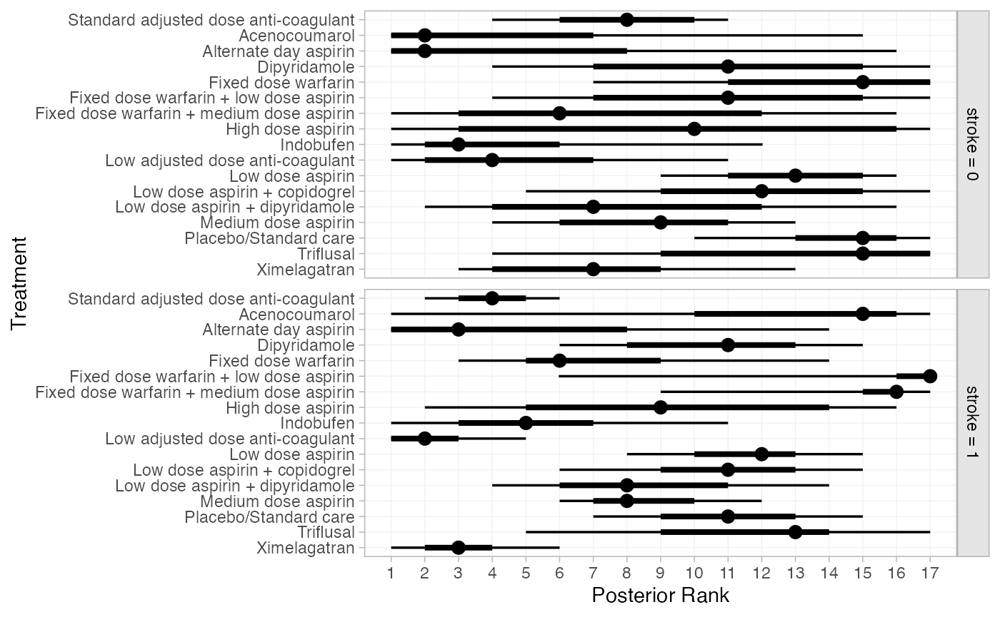
(af_4b_rankprobs <- posterior_rank_probs(af_fit_4b,
newdata = data.frame(stroke = c(0, 1),
label = c("stroke = 0", "stroke = 1")),
study = label))
#> ------------------------------------------------------------- Study: stroke = 0 ----
#>
#> Covariate values:
#> stroke
#> 0
#>
#> p_rank[1] p_rank[2] p_rank[3]
#> d[stroke = 0: Standard adjusted dose anti-coagulant] 0.00 0.00 0.01
#> d[stroke = 0: Acenocoumarol] 0.26 0.24 0.13
#> d[stroke = 0: Alternate day aspirin] 0.44 0.16 0.08
#> d[stroke = 0: Dipyridamole] 0.00 0.00 0.01
#> d[stroke = 0: Fixed dose warfarin] 0.00 0.00 0.00
#> d[stroke = 0: Fixed dose warfarin + low dose aspirin] 0.00 0.01 0.01
#> d[stroke = 0: Fixed dose warfarin + medium dose aspirin] 0.05 0.09 0.12
#> d[stroke = 0: High dose aspirin] 0.03 0.06 0.07
#> d[stroke = 0: Indobufen] 0.16 0.26 0.21
#> d[stroke = 0: Low adjusted dose anti-coagulant] 0.04 0.13 0.21
#> d[stroke = 0: Low dose aspirin] 0.00 0.00 0.00
#> d[stroke = 0: Low dose aspirin + copidogrel] 0.00 0.00 0.00
#> d[stroke = 0: Low dose aspirin + dipyridamole] 0.01 0.03 0.07
#> d[stroke = 0: Medium dose aspirin] 0.00 0.00 0.01
#> d[stroke = 0: Placebo/Standard care] 0.00 0.00 0.00
#> d[stroke = 0: Triflusal] 0.00 0.01 0.01
#> d[stroke = 0: Ximelagatran] 0.00 0.01 0.05
#> p_rank[4] p_rank[5] p_rank[6]
#> d[stroke = 0: Standard adjusted dose anti-coagulant] 0.03 0.08 0.15
#> d[stroke = 0: Acenocoumarol] 0.08 0.06 0.04
#> d[stroke = 0: Alternate day aspirin] 0.06 0.04 0.03
#> d[stroke = 0: Dipyridamole] 0.03 0.04 0.05
#> d[stroke = 0: Fixed dose warfarin] 0.00 0.00 0.01
#> d[stroke = 0: Fixed dose warfarin + low dose aspirin] 0.03 0.04 0.05
#> d[stroke = 0: Fixed dose warfarin + medium dose aspirin] 0.12 0.09 0.07
#> d[stroke = 0: High dose aspirin] 0.07 0.06 0.06
#> d[stroke = 0: Indobufen] 0.12 0.07 0.05
#> d[stroke = 0: Low adjusted dose anti-coagulant] 0.20 0.15 0.09
#> d[stroke = 0: Low dose aspirin] 0.00 0.00 0.00
#> d[stroke = 0: Low dose aspirin + copidogrel] 0.01 0.01 0.02
#> d[stroke = 0: Low dose aspirin + dipyridamole] 0.10 0.11 0.10
#> d[stroke = 0: Medium dose aspirin] 0.02 0.05 0.10
#> d[stroke = 0: Placebo/Standard care] 0.00 0.00 0.00
#> d[stroke = 0: Triflusal] 0.02 0.03 0.03
#> d[stroke = 0: Ximelagatran] 0.11 0.15 0.16
#> p_rank[7] p_rank[8] p_rank[9]
#> d[stroke = 0: Standard adjusted dose anti-coagulant] 0.20 0.19 0.16
#> d[stroke = 0: Acenocoumarol] 0.03 0.02 0.02
#> d[stroke = 0: Alternate day aspirin] 0.02 0.02 0.02
#> d[stroke = 0: Dipyridamole] 0.05 0.07 0.07
#> d[stroke = 0: Fixed dose warfarin] 0.01 0.02 0.03
#> d[stroke = 0: Fixed dose warfarin + low dose aspirin] 0.06 0.06 0.07
#> d[stroke = 0: Fixed dose warfarin + medium dose aspirin] 0.06 0.05 0.05
#> d[stroke = 0: High dose aspirin] 0.04 0.04 0.04
#> d[stroke = 0: Indobufen] 0.04 0.02 0.02
#> d[stroke = 0: Low adjusted dose anti-coagulant] 0.05 0.04 0.03
#> d[stroke = 0: Low dose aspirin] 0.01 0.01 0.03
#> d[stroke = 0: Low dose aspirin + copidogrel] 0.03 0.04 0.07
#> d[stroke = 0: Low dose aspirin + dipyridamole] 0.09 0.09 0.07
#> d[stroke = 0: Medium dose aspirin] 0.13 0.16 0.18
#> d[stroke = 0: Placebo/Standard care] 0.00 0.00 0.01
#> d[stroke = 0: Triflusal] 0.03 0.03 0.04
#> d[stroke = 0: Ximelagatran] 0.14 0.12 0.09
#> p_rank[10] p_rank[11] p_rank[12]
#> d[stroke = 0: Standard adjusted dose anti-coagulant] 0.10 0.05 0.02
#> d[stroke = 0: Acenocoumarol] 0.02 0.01 0.02
#> d[stroke = 0: Alternate day aspirin] 0.02 0.02 0.01
#> d[stroke = 0: Dipyridamole] 0.09 0.11 0.10
#> d[stroke = 0: Fixed dose warfarin] 0.04 0.06 0.07
#> d[stroke = 0: Fixed dose warfarin + low dose aspirin] 0.08 0.10 0.11
#> d[stroke = 0: Fixed dose warfarin + medium dose aspirin] 0.04 0.05 0.04
#> d[stroke = 0: High dose aspirin] 0.05 0.05 0.05
#> d[stroke = 0: Indobufen] 0.01 0.01 0.01
#> d[stroke = 0: Low adjusted dose anti-coagulant] 0.02 0.02 0.01
#> d[stroke = 0: Low dose aspirin] 0.07 0.11 0.17
#> d[stroke = 0: Low dose aspirin + copidogrel] 0.10 0.12 0.12
#> d[stroke = 0: Low dose aspirin + dipyridamole] 0.07 0.07 0.05
#> d[stroke = 0: Medium dose aspirin] 0.15 0.09 0.06
#> d[stroke = 0: Placebo/Standard care] 0.02 0.04 0.08
#> d[stroke = 0: Triflusal] 0.05 0.05 0.06
#> d[stroke = 0: Ximelagatran] 0.06 0.04 0.03
#> p_rank[13] p_rank[14] p_rank[15]
#> d[stroke = 0: Standard adjusted dose anti-coagulant] 0.01 0.00 0.00
#> d[stroke = 0: Acenocoumarol] 0.01 0.01 0.01
#> d[stroke = 0: Alternate day aspirin] 0.01 0.02 0.02
#> d[stroke = 0: Dipyridamole] 0.09 0.08 0.08
#> d[stroke = 0: Fixed dose warfarin] 0.08 0.11 0.13
#> d[stroke = 0: Fixed dose warfarin + low dose aspirin] 0.10 0.09 0.08
#> d[stroke = 0: Fixed dose warfarin + medium dose aspirin] 0.03 0.04 0.03
#> d[stroke = 0: High dose aspirin] 0.05 0.04 0.05
#> d[stroke = 0: Indobufen] 0.01 0.01 0.00
#> d[stroke = 0: Low adjusted dose anti-coagulant] 0.01 0.00 0.00
#> d[stroke = 0: Low dose aspirin] 0.20 0.20 0.13
#> d[stroke = 0: Low dose aspirin + copidogrel] 0.12 0.12 0.11
#> d[stroke = 0: Low dose aspirin + dipyridamole] 0.04 0.04 0.02
#> d[stroke = 0: Medium dose aspirin] 0.03 0.01 0.00
#> d[stroke = 0: Placebo/Standard care] 0.13 0.19 0.23
#> d[stroke = 0: Triflusal] 0.06 0.05 0.09
#> d[stroke = 0: Ximelagatran] 0.02 0.01 0.00
#> p_rank[16] p_rank[17]
#> d[stroke = 0: Standard adjusted dose anti-coagulant] 0.00 0.00
#> d[stroke = 0: Acenocoumarol] 0.02 0.00
#> d[stroke = 0: Alternate day aspirin] 0.02 0.02
#> d[stroke = 0: Dipyridamole] 0.08 0.05
#> d[stroke = 0: Fixed dose warfarin] 0.20 0.23
#> d[stroke = 0: Fixed dose warfarin + low dose aspirin] 0.07 0.04
#> d[stroke = 0: Fixed dose warfarin + medium dose aspirin] 0.04 0.02
#> d[stroke = 0: High dose aspirin] 0.08 0.14
#> d[stroke = 0: Indobufen] 0.00 0.00
#> d[stroke = 0: Low adjusted dose anti-coagulant] 0.00 0.00
#> d[stroke = 0: Low dose aspirin] 0.07 0.02
#> d[stroke = 0: Low dose aspirin + copidogrel] 0.08 0.04
#> d[stroke = 0: Low dose aspirin + dipyridamole] 0.02 0.01
#> d[stroke = 0: Medium dose aspirin] 0.00 0.00
#> d[stroke = 0: Placebo/Standard care] 0.19 0.10
#> d[stroke = 0: Triflusal] 0.13 0.32
#> d[stroke = 0: Ximelagatran] 0.00 0.00
#>
#> ------------------------------------------------------------- Study: stroke = 1 ----
#>
#> Covariate values:
#> stroke
#> 1
#>
#> p_rank[1] p_rank[2] p_rank[3]
#> d[stroke = 1: Standard adjusted dose anti-coagulant] 0.01 0.13 0.34
#> d[stroke = 1: Acenocoumarol] 0.04 0.02 0.01
#> d[stroke = 1: Alternate day aspirin] 0.38 0.10 0.04
#> d[stroke = 1: Dipyridamole] 0.00 0.00 0.00
#> d[stroke = 1: Fixed dose warfarin] 0.00 0.01 0.02
#> d[stroke = 1: Fixed dose warfarin + low dose aspirin] 0.00 0.01 0.01
#> d[stroke = 1: Fixed dose warfarin + medium dose aspirin] 0.00 0.00 0.00
#> d[stroke = 1: High dose aspirin] 0.02 0.03 0.03
#> d[stroke = 1: Indobufen] 0.03 0.09 0.10
#> d[stroke = 1: Low adjusted dose anti-coagulant] 0.43 0.33 0.11
#> d[stroke = 1: Low dose aspirin] 0.00 0.00 0.00
#> d[stroke = 1: Low dose aspirin + copidogrel] 0.00 0.00 0.00
#> d[stroke = 1: Low dose aspirin + dipyridamole] 0.00 0.01 0.01
#> d[stroke = 1: Medium dose aspirin] 0.00 0.00 0.00
#> d[stroke = 1: Placebo/Standard care] 0.00 0.00 0.00
#> d[stroke = 1: Triflusal] 0.00 0.00 0.01
#> d[stroke = 1: Ximelagatran] 0.08 0.26 0.31
#> p_rank[4] p_rank[5] p_rank[6]
#> d[stroke = 1: Standard adjusted dose anti-coagulant] 0.34 0.13 0.04
#> d[stroke = 1: Acenocoumarol] 0.01 0.01 0.03
#> d[stroke = 1: Alternate day aspirin] 0.06 0.09 0.08
#> d[stroke = 1: Dipyridamole] 0.00 0.01 0.04
#> d[stroke = 1: Fixed dose warfarin] 0.07 0.17 0.26
#> d[stroke = 1: Fixed dose warfarin + low dose aspirin] 0.00 0.00 0.01
#> d[stroke = 1: Fixed dose warfarin + medium dose aspirin] 0.00 0.00 0.00
#> d[stroke = 1: High dose aspirin] 0.03 0.07 0.09
#> d[stroke = 1: Indobufen] 0.17 0.26 0.16
#> d[stroke = 1: Low adjusted dose anti-coagulant] 0.07 0.04 0.02
#> d[stroke = 1: Low dose aspirin] 0.00 0.00 0.00
#> d[stroke = 1: Low dose aspirin + copidogrel] 0.00 0.01 0.02
#> d[stroke = 1: Low dose aspirin + dipyridamole] 0.03 0.07 0.13
#> d[stroke = 1: Medium dose aspirin] 0.00 0.01 0.06
#> d[stroke = 1: Placebo/Standard care] 0.00 0.00 0.01
#> d[stroke = 1: Triflusal] 0.01 0.02 0.03
#> d[stroke = 1: Ximelagatran] 0.19 0.10 0.03
#> p_rank[7] p_rank[8] p_rank[9]
#> d[stroke = 1: Standard adjusted dose anti-coagulant] 0.01 0.00 0.00
#> d[stroke = 1: Acenocoumarol] 0.02 0.02 0.01
#> d[stroke = 1: Alternate day aspirin] 0.05 0.03 0.03
#> d[stroke = 1: Dipyridamole] 0.07 0.10 0.13
#> d[stroke = 1: Fixed dose warfarin] 0.15 0.09 0.06
#> d[stroke = 1: Fixed dose warfarin + low dose aspirin] 0.01 0.01 0.01
#> d[stroke = 1: Fixed dose warfarin + medium dose aspirin] 0.01 0.01 0.01
#> d[stroke = 1: High dose aspirin] 0.10 0.09 0.07
#> d[stroke = 1: Indobufen] 0.08 0.03 0.02
#> d[stroke = 1: Low adjusted dose anti-coagulant] 0.00 0.00 0.00
#> d[stroke = 1: Low dose aspirin] 0.01 0.03 0.06
#> d[stroke = 1: Low dose aspirin + copidogrel] 0.05 0.07 0.10
#> d[stroke = 1: Low dose aspirin + dipyridamole] 0.18 0.16 0.12
#> d[stroke = 1: Medium dose aspirin] 0.18 0.24 0.21
#> d[stroke = 1: Placebo/Standard care] 0.02 0.05 0.11
#> d[stroke = 1: Triflusal] 0.05 0.05 0.06
#> d[stroke = 1: Ximelagatran] 0.01 0.00 0.00
#> p_rank[10] p_rank[11] p_rank[12]
#> d[stroke = 1: Standard adjusted dose anti-coagulant] 0.00 0.00 0.00
#> d[stroke = 1: Acenocoumarol] 0.01 0.02 0.01
#> d[stroke = 1: Alternate day aspirin] 0.02 0.02 0.02
#> d[stroke = 1: Dipyridamole] 0.12 0.13 0.11
#> d[stroke = 1: Fixed dose warfarin] 0.04 0.04 0.03
#> d[stroke = 1: Fixed dose warfarin + low dose aspirin] 0.01 0.01 0.01
#> d[stroke = 1: Fixed dose warfarin + medium dose aspirin] 0.01 0.01 0.01
#> d[stroke = 1: High dose aspirin] 0.06 0.06 0.06
#> d[stroke = 1: Indobufen] 0.01 0.01 0.01
#> d[stroke = 1: Low adjusted dose anti-coagulant] 0.00 0.00 0.00
#> d[stroke = 1: Low dose aspirin] 0.11 0.17 0.23
#> d[stroke = 1: Low dose aspirin + copidogrel] 0.12 0.14 0.16
#> d[stroke = 1: Low dose aspirin + dipyridamole] 0.09 0.07 0.06
#> d[stroke = 1: Medium dose aspirin] 0.15 0.08 0.03
#> d[stroke = 1: Placebo/Standard care] 0.18 0.20 0.18
#> d[stroke = 1: Triflusal] 0.06 0.06 0.07
#> d[stroke = 1: Ximelagatran] 0.00 0.00 0.00
#> p_rank[13] p_rank[14] p_rank[15]
#> d[stroke = 1: Standard adjusted dose anti-coagulant] 0.00 0.00 0.00
#> d[stroke = 1: Acenocoumarol] 0.02 0.05 0.44
#> d[stroke = 1: Alternate day aspirin] 0.03 0.03 0.01
#> d[stroke = 1: Dipyridamole] 0.13 0.09 0.03
#> d[stroke = 1: Fixed dose warfarin] 0.03 0.02 0.01
#> d[stroke = 1: Fixed dose warfarin + low dose aspirin] 0.01 0.02 0.05
#> d[stroke = 1: Fixed dose warfarin + medium dose aspirin] 0.01 0.02 0.26
#> d[stroke = 1: High dose aspirin] 0.09 0.14 0.04
#> d[stroke = 1: Indobufen] 0.01 0.00 0.00
#> d[stroke = 1: Low adjusted dose anti-coagulant] 0.00 0.00 0.00
#> d[stroke = 1: Low dose aspirin] 0.22 0.11 0.03
#> d[stroke = 1: Low dose aspirin + copidogrel] 0.16 0.10 0.04
#> d[stroke = 1: Low dose aspirin + dipyridamole] 0.04 0.02 0.01
#> d[stroke = 1: Medium dose aspirin] 0.02 0.01 0.00
#> d[stroke = 1: Placebo/Standard care] 0.14 0.07 0.02
#> d[stroke = 1: Triflusal] 0.12 0.33 0.06
#> d[stroke = 1: Ximelagatran] 0.00 0.00 0.00
#> p_rank[16] p_rank[17]
#> d[stroke = 1: Standard adjusted dose anti-coagulant] 0.00 0.00
#> d[stroke = 1: Acenocoumarol] 0.20 0.07
#> d[stroke = 1: Alternate day aspirin] 0.00 0.01
#> d[stroke = 1: Dipyridamole] 0.01 0.01
#> d[stroke = 1: Fixed dose warfarin] 0.00 0.00
#> d[stroke = 1: Fixed dose warfarin + low dose aspirin] 0.18 0.66
#> d[stroke = 1: Fixed dose warfarin + medium dose aspirin] 0.50 0.16
#> d[stroke = 1: High dose aspirin] 0.02 0.02
#> d[stroke = 1: Indobufen] 0.00 0.00
#> d[stroke = 1: Low adjusted dose anti-coagulant] 0.00 0.00
#> d[stroke = 1: Low dose aspirin] 0.01 0.01
#> d[stroke = 1: Low dose aspirin + copidogrel] 0.02 0.01
#> d[stroke = 1: Low dose aspirin + dipyridamole] 0.00 0.00
#> d[stroke = 1: Medium dose aspirin] 0.00 0.00
#> d[stroke = 1: Placebo/Standard care] 0.01 0.00
#> d[stroke = 1: Triflusal] 0.03 0.05
#> d[stroke = 1: Ximelagatran] 0.00 0.00
# Modify the default output with ggplot2 functionality
library(ggplot2)
plot(af_4b_rankprobs) +
facet_grid(Treatment~Study, labeller = label_wrap_gen(20)) +
theme(strip.text.y = element_text(angle = 0))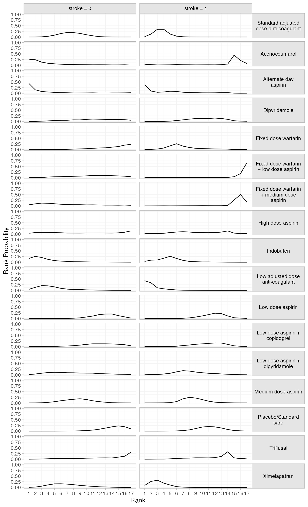
(af_4b_cumrankprobs <- posterior_rank_probs(af_fit_4b, cumulative = TRUE,
newdata = data.frame(stroke = c(0, 1),
label = c("stroke = 0", "stroke = 1")),
study = label))
#> ------------------------------------------------------------- Study: stroke = 0 ----
#>
#> Covariate values:
#> stroke
#> 0
#>
#> p_rank[1] p_rank[2] p_rank[3]
#> d[stroke = 0: Standard adjusted dose anti-coagulant] 0.00 0.00 0.01
#> d[stroke = 0: Acenocoumarol] 0.26 0.50 0.64
#> d[stroke = 0: Alternate day aspirin] 0.44 0.59 0.67
#> d[stroke = 0: Dipyridamole] 0.00 0.00 0.01
#> d[stroke = 0: Fixed dose warfarin] 0.00 0.00 0.00
#> d[stroke = 0: Fixed dose warfarin + low dose aspirin] 0.00 0.01 0.02
#> d[stroke = 0: Fixed dose warfarin + medium dose aspirin] 0.05 0.14 0.26
#> d[stroke = 0: High dose aspirin] 0.03 0.10 0.17
#> d[stroke = 0: Indobufen] 0.16 0.42 0.63
#> d[stroke = 0: Low adjusted dose anti-coagulant] 0.04 0.17 0.38
#> d[stroke = 0: Low dose aspirin] 0.00 0.00 0.00
#> d[stroke = 0: Low dose aspirin + copidogrel] 0.00 0.00 0.01
#> d[stroke = 0: Low dose aspirin + dipyridamole] 0.01 0.04 0.11
#> d[stroke = 0: Medium dose aspirin] 0.00 0.00 0.01
#> d[stroke = 0: Placebo/Standard care] 0.00 0.00 0.00
#> d[stroke = 0: Triflusal] 0.00 0.01 0.02
#> d[stroke = 0: Ximelagatran] 0.00 0.01 0.07
#> p_rank[4] p_rank[5] p_rank[6]
#> d[stroke = 0: Standard adjusted dose anti-coagulant] 0.04 0.12 0.27
#> d[stroke = 0: Acenocoumarol] 0.72 0.78 0.82
#> d[stroke = 0: Alternate day aspirin] 0.73 0.77 0.80
#> d[stroke = 0: Dipyridamole] 0.04 0.08 0.13
#> d[stroke = 0: Fixed dose warfarin] 0.01 0.01 0.02
#> d[stroke = 0: Fixed dose warfarin + low dose aspirin] 0.05 0.09 0.14
#> d[stroke = 0: Fixed dose warfarin + medium dose aspirin] 0.37 0.47 0.54
#> d[stroke = 0: High dose aspirin] 0.24 0.30 0.36
#> d[stroke = 0: Indobufen] 0.75 0.82 0.87
#> d[stroke = 0: Low adjusted dose anti-coagulant] 0.58 0.73 0.82
#> d[stroke = 0: Low dose aspirin] 0.00 0.00 0.00
#> d[stroke = 0: Low dose aspirin + copidogrel] 0.02 0.03 0.05
#> d[stroke = 0: Low dose aspirin + dipyridamole] 0.21 0.32 0.42
#> d[stroke = 0: Medium dose aspirin] 0.03 0.08 0.18
#> d[stroke = 0: Placebo/Standard care] 0.00 0.00 0.00
#> d[stroke = 0: Triflusal] 0.04 0.07 0.10
#> d[stroke = 0: Ximelagatran] 0.17 0.33 0.49
#> p_rank[7] p_rank[8] p_rank[9]
#> d[stroke = 0: Standard adjusted dose anti-coagulant] 0.47 0.66 0.82
#> d[stroke = 0: Acenocoumarol] 0.85 0.87 0.89
#> d[stroke = 0: Alternate day aspirin] 0.82 0.84 0.86
#> d[stroke = 0: Dipyridamole] 0.18 0.25 0.32
#> d[stroke = 0: Fixed dose warfarin] 0.03 0.05 0.08
#> d[stroke = 0: Fixed dose warfarin + low dose aspirin] 0.20 0.26 0.33
#> d[stroke = 0: Fixed dose warfarin + medium dose aspirin] 0.60 0.66 0.71
#> d[stroke = 0: High dose aspirin] 0.40 0.45 0.49
#> d[stroke = 0: Indobufen] 0.91 0.93 0.94
#> d[stroke = 0: Low adjusted dose anti-coagulant] 0.87 0.91 0.95
#> d[stroke = 0: Low dose aspirin] 0.01 0.02 0.05
#> d[stroke = 0: Low dose aspirin + copidogrel] 0.07 0.12 0.18
#> d[stroke = 0: Low dose aspirin + dipyridamole] 0.51 0.60 0.67
#> d[stroke = 0: Medium dose aspirin] 0.31 0.47 0.66
#> d[stroke = 0: Placebo/Standard care] 0.00 0.01 0.02
#> d[stroke = 0: Triflusal] 0.12 0.16 0.19
#> d[stroke = 0: Ximelagatran] 0.63 0.75 0.83
#> p_rank[10] p_rank[11] p_rank[12]
#> d[stroke = 0: Standard adjusted dose anti-coagulant] 0.92 0.98 0.99
#> d[stroke = 0: Acenocoumarol] 0.91 0.93 0.95
#> d[stroke = 0: Alternate day aspirin] 0.87 0.89 0.91
#> d[stroke = 0: Dipyridamole] 0.41 0.52 0.61
#> d[stroke = 0: Fixed dose warfarin] 0.12 0.18 0.25
#> d[stroke = 0: Fixed dose warfarin + low dose aspirin] 0.41 0.51 0.62
#> d[stroke = 0: Fixed dose warfarin + medium dose aspirin] 0.75 0.80 0.84
#> d[stroke = 0: High dose aspirin] 0.54 0.59 0.64
#> d[stroke = 0: Indobufen] 0.96 0.97 0.98
#> d[stroke = 0: Low adjusted dose anti-coagulant] 0.97 0.98 0.99
#> d[stroke = 0: Low dose aspirin] 0.11 0.22 0.39
#> d[stroke = 0: Low dose aspirin + copidogrel] 0.28 0.41 0.53
#> d[stroke = 0: Low dose aspirin + dipyridamole] 0.74 0.81 0.87
#> d[stroke = 0: Medium dose aspirin] 0.81 0.90 0.96
#> d[stroke = 0: Placebo/Standard care] 0.04 0.09 0.17
#> d[stroke = 0: Triflusal] 0.24 0.29 0.35
#> d[stroke = 0: Ximelagatran] 0.90 0.94 0.97
#> p_rank[13] p_rank[14] p_rank[15]
#> d[stroke = 0: Standard adjusted dose anti-coagulant] 1.00 1.00 1.00
#> d[stroke = 0: Acenocoumarol] 0.96 0.97 0.98
#> d[stroke = 0: Alternate day aspirin] 0.92 0.94 0.96
#> d[stroke = 0: Dipyridamole] 0.71 0.79 0.87
#> d[stroke = 0: Fixed dose warfarin] 0.33 0.44 0.57
#> d[stroke = 0: Fixed dose warfarin + low dose aspirin] 0.72 0.81 0.89
#> d[stroke = 0: Fixed dose warfarin + medium dose aspirin] 0.87 0.91 0.94
#> d[stroke = 0: High dose aspirin] 0.68 0.73 0.78
#> d[stroke = 0: Indobufen] 0.98 0.99 0.99
#> d[stroke = 0: Low adjusted dose anti-coagulant] 1.00 1.00 1.00
#> d[stroke = 0: Low dose aspirin] 0.59 0.79 0.91
#> d[stroke = 0: Low dose aspirin + copidogrel] 0.66 0.77 0.88
#> d[stroke = 0: Low dose aspirin + dipyridamole] 0.91 0.94 0.97
#> d[stroke = 0: Medium dose aspirin] 0.99 1.00 1.00
#> d[stroke = 0: Placebo/Standard care] 0.30 0.49 0.71
#> d[stroke = 0: Triflusal] 0.41 0.46 0.55
#> d[stroke = 0: Ximelagatran] 0.99 0.99 1.00
#> p_rank[16] p_rank[17]
#> d[stroke = 0: Standard adjusted dose anti-coagulant] 1.00 1
#> d[stroke = 0: Acenocoumarol] 1.00 1
#> d[stroke = 0: Alternate day aspirin] 0.98 1
#> d[stroke = 0: Dipyridamole] 0.95 1
#> d[stroke = 0: Fixed dose warfarin] 0.77 1
#> d[stroke = 0: Fixed dose warfarin + low dose aspirin] 0.96 1
#> d[stroke = 0: Fixed dose warfarin + medium dose aspirin] 0.98 1
#> d[stroke = 0: High dose aspirin] 0.86 1
#> d[stroke = 0: Indobufen] 1.00 1
#> d[stroke = 0: Low adjusted dose anti-coagulant] 1.00 1
#> d[stroke = 0: Low dose aspirin] 0.98 1
#> d[stroke = 0: Low dose aspirin + copidogrel] 0.96 1
#> d[stroke = 0: Low dose aspirin + dipyridamole] 0.99 1
#> d[stroke = 0: Medium dose aspirin] 1.00 1
#> d[stroke = 0: Placebo/Standard care] 0.90 1
#> d[stroke = 0: Triflusal] 0.68 1
#> d[stroke = 0: Ximelagatran] 1.00 1
#>
#> ------------------------------------------------------------- Study: stroke = 1 ----
#>
#> Covariate values:
#> stroke
#> 1
#>
#> p_rank[1] p_rank[2] p_rank[3]
#> d[stroke = 1: Standard adjusted dose anti-coagulant] 0.01 0.14 0.48
#> d[stroke = 1: Acenocoumarol] 0.04 0.06 0.07
#> d[stroke = 1: Alternate day aspirin] 0.38 0.48 0.53
#> d[stroke = 1: Dipyridamole] 0.00 0.00 0.01
#> d[stroke = 1: Fixed dose warfarin] 0.00 0.01 0.04
#> d[stroke = 1: Fixed dose warfarin + low dose aspirin] 0.00 0.01 0.02
#> d[stroke = 1: Fixed dose warfarin + medium dose aspirin] 0.00 0.00 0.00
#> d[stroke = 1: High dose aspirin] 0.02 0.04 0.07
#> d[stroke = 1: Indobufen] 0.03 0.12 0.22
#> d[stroke = 1: Low adjusted dose anti-coagulant] 0.43 0.76 0.87
#> d[stroke = 1: Low dose aspirin] 0.00 0.00 0.00
#> d[stroke = 1: Low dose aspirin + copidogrel] 0.00 0.00 0.00
#> d[stroke = 1: Low dose aspirin + dipyridamole] 0.00 0.01 0.02
#> d[stroke = 1: Medium dose aspirin] 0.00 0.00 0.00
#> d[stroke = 1: Placebo/Standard care] 0.00 0.00 0.00
#> d[stroke = 1: Triflusal] 0.00 0.00 0.01
#> d[stroke = 1: Ximelagatran] 0.08 0.35 0.66
#> p_rank[4] p_rank[5] p_rank[6]
#> d[stroke = 1: Standard adjusted dose anti-coagulant] 0.82 0.95 0.99
#> d[stroke = 1: Acenocoumarol] 0.08 0.10 0.12
#> d[stroke = 1: Alternate day aspirin] 0.58 0.68 0.76
#> d[stroke = 1: Dipyridamole] 0.01 0.02 0.06
#> d[stroke = 1: Fixed dose warfarin] 0.11 0.27 0.53
#> d[stroke = 1: Fixed dose warfarin + low dose aspirin] 0.02 0.03 0.03
#> d[stroke = 1: Fixed dose warfarin + medium dose aspirin] 0.01 0.01 0.01
#> d[stroke = 1: High dose aspirin] 0.10 0.17 0.26
#> d[stroke = 1: Indobufen] 0.40 0.66 0.82
#> d[stroke = 1: Low adjusted dose anti-coagulant] 0.94 0.98 0.99
#> d[stroke = 1: Low dose aspirin] 0.00 0.00 0.00
#> d[stroke = 1: Low dose aspirin + copidogrel] 0.00 0.01 0.03
#> d[stroke = 1: Low dose aspirin + dipyridamole] 0.06 0.12 0.25
#> d[stroke = 1: Medium dose aspirin] 0.01 0.02 0.08
#> d[stroke = 1: Placebo/Standard care] 0.00 0.00 0.01
#> d[stroke = 1: Triflusal] 0.02 0.03 0.07
#> d[stroke = 1: Ximelagatran] 0.85 0.95 0.98
#> p_rank[7] p_rank[8] p_rank[9]
#> d[stroke = 1: Standard adjusted dose anti-coagulant] 1.00 1.00 1.00
#> d[stroke = 1: Acenocoumarol] 0.14 0.16 0.17
#> d[stroke = 1: Alternate day aspirin] 0.80 0.84 0.86
#> d[stroke = 1: Dipyridamole] 0.13 0.24 0.36
#> d[stroke = 1: Fixed dose warfarin] 0.69 0.78 0.83
#> d[stroke = 1: Fixed dose warfarin + low dose aspirin] 0.04 0.05 0.06
#> d[stroke = 1: Fixed dose warfarin + medium dose aspirin] 0.02 0.02 0.03
#> d[stroke = 1: High dose aspirin] 0.36 0.45 0.52
#> d[stroke = 1: Indobufen] 0.90 0.94 0.96
#> d[stroke = 1: Low adjusted dose anti-coagulant] 1.00 1.00 1.00
#> d[stroke = 1: Low dose aspirin] 0.01 0.04 0.10
#> d[stroke = 1: Low dose aspirin + copidogrel] 0.08 0.15 0.25
#> d[stroke = 1: Low dose aspirin + dipyridamole] 0.43 0.60 0.72
#> d[stroke = 1: Medium dose aspirin] 0.26 0.50 0.72
#> d[stroke = 1: Placebo/Standard care] 0.03 0.08 0.19
#> d[stroke = 1: Triflusal] 0.11 0.16 0.22
#> d[stroke = 1: Ximelagatran] 0.99 1.00 1.00
#> p_rank[10] p_rank[11] p_rank[12]
#> d[stroke = 1: Standard adjusted dose anti-coagulant] 1.00 1.00 1.00
#> d[stroke = 1: Acenocoumarol] 0.18 0.20 0.21
#> d[stroke = 1: Alternate day aspirin] 0.89 0.91 0.93
#> d[stroke = 1: Dipyridamole] 0.48 0.61 0.72
#> d[stroke = 1: Fixed dose warfarin] 0.88 0.91 0.94
#> d[stroke = 1: Fixed dose warfarin + low dose aspirin] 0.07 0.08 0.08
#> d[stroke = 1: Fixed dose warfarin + medium dose aspirin] 0.04 0.05 0.06
#> d[stroke = 1: High dose aspirin] 0.58 0.63 0.70
#> d[stroke = 1: Indobufen] 0.97 0.98 0.99
#> d[stroke = 1: Low adjusted dose anti-coagulant] 1.00 1.00 1.00
#> d[stroke = 1: Low dose aspirin] 0.22 0.38 0.62
#> d[stroke = 1: Low dose aspirin + copidogrel] 0.38 0.52 0.68
#> d[stroke = 1: Low dose aspirin + dipyridamole] 0.81 0.87 0.93
#> d[stroke = 1: Medium dose aspirin] 0.87 0.94 0.98
#> d[stroke = 1: Placebo/Standard care] 0.37 0.57 0.76
#> d[stroke = 1: Triflusal] 0.28 0.34 0.41
#> d[stroke = 1: Ximelagatran] 1.00 1.00 1.00
#> p_rank[13] p_rank[14] p_rank[15]
#> d[stroke = 1: Standard adjusted dose anti-coagulant] 1.00 1.00 1.00
#> d[stroke = 1: Acenocoumarol] 0.23 0.28 0.72
#> d[stroke = 1: Alternate day aspirin] 0.95 0.98 0.99
#> d[stroke = 1: Dipyridamole] 0.86 0.95 0.98
#> d[stroke = 1: Fixed dose warfarin] 0.97 0.99 0.99
#> d[stroke = 1: Fixed dose warfarin + low dose aspirin] 0.09 0.11 0.15
#> d[stroke = 1: Fixed dose warfarin + medium dose aspirin] 0.06 0.08 0.34
#> d[stroke = 1: High dose aspirin] 0.78 0.92 0.96
#> d[stroke = 1: Indobufen] 1.00 1.00 1.00
#> d[stroke = 1: Low adjusted dose anti-coagulant] 1.00 1.00 1.00
#> d[stroke = 1: Low dose aspirin] 0.83 0.95 0.98
#> d[stroke = 1: Low dose aspirin + copidogrel] 0.84 0.94 0.98
#> d[stroke = 1: Low dose aspirin + dipyridamole] 0.96 0.99 1.00
#> d[stroke = 1: Medium dose aspirin] 0.99 1.00 1.00
#> d[stroke = 1: Placebo/Standard care] 0.89 0.96 0.99
#> d[stroke = 1: Triflusal] 0.53 0.86 0.92
#> d[stroke = 1: Ximelagatran] 1.00 1.00 1.00
#> p_rank[16] p_rank[17]
#> d[stroke = 1: Standard adjusted dose anti-coagulant] 1.00 1
#> d[stroke = 1: Acenocoumarol] 0.93 1
#> d[stroke = 1: Alternate day aspirin] 0.99 1
#> d[stroke = 1: Dipyridamole] 0.99 1
#> d[stroke = 1: Fixed dose warfarin] 1.00 1
#> d[stroke = 1: Fixed dose warfarin + low dose aspirin] 0.34 1
#> d[stroke = 1: Fixed dose warfarin + medium dose aspirin] 0.84 1
#> d[stroke = 1: High dose aspirin] 0.98 1
#> d[stroke = 1: Indobufen] 1.00 1
#> d[stroke = 1: Low adjusted dose anti-coagulant] 1.00 1
#> d[stroke = 1: Low dose aspirin] 0.99 1
#> d[stroke = 1: Low dose aspirin + copidogrel] 0.99 1
#> d[stroke = 1: Low dose aspirin + dipyridamole] 1.00 1
#> d[stroke = 1: Medium dose aspirin] 1.00 1
#> d[stroke = 1: Placebo/Standard care] 1.00 1
#> d[stroke = 1: Triflusal] 0.95 1
#> d[stroke = 1: Ximelagatran] 1.00 1
plot(af_4b_cumrankprobs) +
facet_grid(Treatment~Study, labeller = label_wrap_gen(20)) +
theme(strip.text.y = element_text(angle = 0))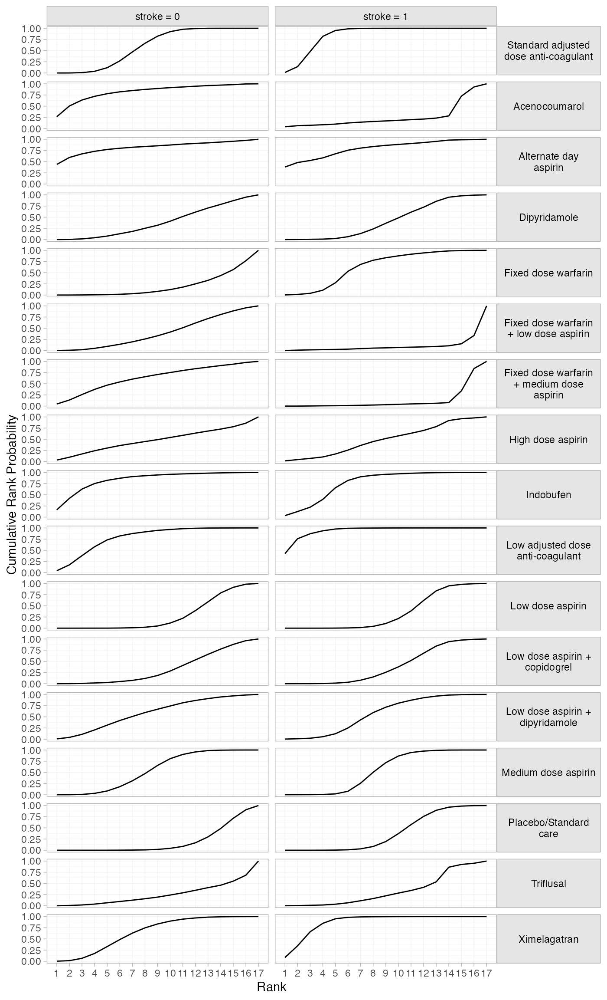
Model fit and comparison
Model fit can be checked using the dic() function:
(af_dic_1 <- dic(af_fit_1))
#> Residual deviance: 60.4 (on 61 data points)
#> pD: 48.7
#> DIC: 109
(af_dic_4b <- dic(af_fit_4b))
#> Residual deviance: 57.9 (on 61 data points)
#> pD: 47.9
#> DIC: 105.7Both models fit the data well, having posterior mean residual deviance close to the number of data points. The DIC is slightly lower for the meta-regression model, although only by a couple of points (substantial differences are usually considered 3-5 points). The estimated heterogeneity standard deviation is much lower for the meta-regression model, suggesting that adjusting for the proportion of patients with prior stroke is explaining some of the heterogeneity in the data.
We can also examine the residual deviance contributions with the
corresponding plot() method.
plot(af_dic_1)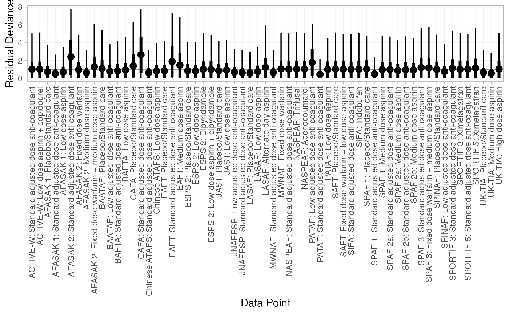
plot(af_dic_4b)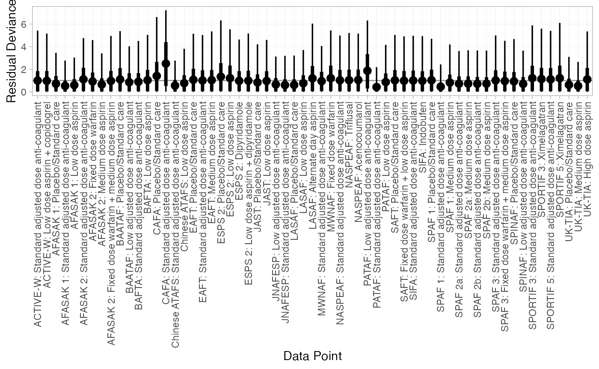